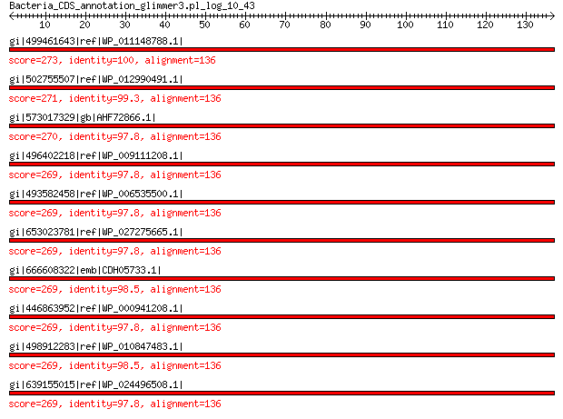

bitscore colors: <40, 40-50 , 50-80, 80-200, >200
 BLASTP 2.2.31+
Reference: Stephen F. Altschul, Thomas L. Madden, Alejandro A.
Schaffer, Jinghui Zhang, Zheng Zhang, Webb Miller, and David J.
Lipman (1997), "Gapped BLAST and PSI-BLAST: a new generation of
protein database search programs", Nucleic Acids Res. 25:3389-3402.
Reference for composition-based statistics: Alejandro A. Schaffer,
L. Aravind, Thomas L. Madden, Sergei Shavirin, John L. Spouge, Yuri
I. Wolf, Eugene V. Koonin, and Stephen F. Altschul (2001),
"Improving the accuracy of PSI-BLAST protein database searches with
composition-based statistics and other refinements", Nucleic Acids
Res. 29:2994-3005.
Database: All non-redundant GenBank CDS translations+PDB+SwissProt+PIR+PRF
excluding environmental samples from WGS projects
49,011,213 sequences; 17,563,301,199 total letters
Query= Bacteria_CDS_annotation_glimmer3.pl_log_10_43
Length=136
Score E
Sequences producing significant alignments: (Bits) Value
gi|499461643|ref|WP_011148788.1| 50S ribosomal protein L16 273 2e-91
gi|502755507|ref|WP_012990491.1| MULTISPECIES: 50S ribosomal pro... 271 9e-91
gi|573017329|gb|AHF72866.1| LSU ribosomal protein L16p (L10e) 270 2e-90
gi|496402218|ref|WP_009111208.1| MULTISPECIES: 50S ribosomal pro... 269 3e-90
gi|493582458|ref|WP_006535500.1| MULTISPECIES: 50S ribosomal pro... 269 3e-90
gi|653023781|ref|WP_027275665.1| 50S ribosomal protein L16 269 4e-90
gi|666608322|emb|CDH05733.1| 50S ribosomal subunit protein L16 269 4e-90
gi|446863952|ref|WP_000941208.1| MULTISPECIES: 50S ribosomal pro... 269 5e-90
gi|498912283|ref|WP_010847483.1| 50S ribosomal protein L16 269 5e-90
gi|639155015|ref|WP_024496508.1| 50S ribosomal protein L16 269 5e-90
>gi|499461643|ref|WP_011148788.1| 50S ribosomal protein L16 [Photorhabdus luminescens]
gi|37528536|ref|NP_931881.1| 50S ribosomal protein L16 [Photorhabdus luminescens subsp. laumondii
TTO1]
gi|81572236|sp|Q7MYF8.1|RL16_PHOLL RecName: Full=50S ribosomal protein L16 [Photorhabdus luminescens
subsp. laumondii TTO1]
gi|36787974|emb|CAE17091.1| 50S ribosomal protein L16 [Photorhabdus luminescens subsp. laumondii
TTO1]
gi|604177080|gb|EYU13821.1| LSU ribosomal protein L16P [Photorhabdus luminescens BA1]
Length=136
Score = 273 bits (697), Expect = 2e-91, Method: Compositional matrix adjust.
Identities = 136/136 (100%), Positives = 136/136 (100%), Gaps = 0/136 (0%)
Query 1 MLQPKRTKFRKMHKGRNRGLAAGADVSFGTFGLKAVGRGRLTARQIEAARRAMTRAIKRQ 60
MLQPKRTKFRKMHKGRNRGLAAGADVSFGTFGLKAVGRGRLTARQIEAARRAMTRAIKRQ
Sbjct 1 MLQPKRTKFRKMHKGRNRGLAAGADVSFGTFGLKAVGRGRLTARQIEAARRAMTRAIKRQ 60
Query 61 GKIWIRVFPDKPITEKPLEVRMGKGKGNVEYWVALIQPGKVLYEMDGVPEELAREAFKLA 120
GKIWIRVFPDKPITEKPLEVRMGKGKGNVEYWVALIQPGKVLYEMDGVPEELAREAFKLA
Sbjct 61 GKIWIRVFPDKPITEKPLEVRMGKGKGNVEYWVALIQPGKVLYEMDGVPEELAREAFKLA 120
Query 121 AAKLPIKTTFVTKTVM 136
AAKLPIKTTFVTKTVM
Sbjct 121 AAKLPIKTTFVTKTVM 136
>gi|502755507|ref|WP_012990491.1| MULTISPECIES: 50S ribosomal protein L16 [Enterobacteriaceae]
gi|253991681|ref|YP_003043037.1| 50S ribosomal protein L16 [Photorhabdus asymbiotica]
gi|290477185|ref|YP_003470100.1| 50S ribosomal protein L16 [Xenorhabdus bovienii SS-2004]
gi|253783131|emb|CAQ86296.1| 50S ribosomal protein L16 [Photorhabdus asymbiotica]
gi|289176533|emb|CBJ83342.1| 50S ribosomal subunit protein L16 [Xenorhabdus bovienii SS-2004]
gi|530711214|gb|EQC02075.1| 50S ribosomal protein L16 [Photorhabdus temperata subsp. temperata
M1021]
gi|550875188|gb|ERT14221.1| 50S ribosomal protein L16 [Photorhabdus temperata J3]
gi|572731298|gb|ETS29487.1| LSU ribosomal protein L16P [Photorhabdus temperata subsp. khanii
NC19]
gi|575846150|emb|CDL84415.1| 50S ribosomal protein L16 [Xenorhabdus szentirmaii DSM 16338]
gi|575849919|emb|CDL87614.1| 50S ribosomal protein L16 [Xenorhabdus cabanillasii JM26]
gi|661559764|emb|CDG15995.1| 50S ribosomal protein L16 [Xenorhabdus doucetiae]
gi|661566767|emb|CDG23169.1| 50S ribosomal protein L16 [Xenorhabdus poinarii G6]
gi|662546829|gb|KER01467.1| LSU ribosomal protein L16P [Photorhabdus temperata subsp. temperata
Meg1]
gi|666603410|emb|CDH29091.1| 50S ribosomal subunit protein L16 [Xenorhabdus bovienii str.
Jollieti]
gi|666631600|emb|CDH31950.1| 50S ribosomal subunit protein L16 [Xenorhabdus bovienii str.
Intermedium]
Length=136
Score = 271 bits (692), Expect = 9e-91, Method: Compositional matrix adjust.
Identities = 135/136 (99%), Positives = 136/136 (100%), Gaps = 0/136 (0%)
Query 1 MLQPKRTKFRKMHKGRNRGLAAGADVSFGTFGLKAVGRGRLTARQIEAARRAMTRAIKRQ 60
MLQPKRTKFRK+HKGRNRGLAAGADVSFGTFGLKAVGRGRLTARQIEAARRAMTRAIKRQ
Sbjct 1 MLQPKRTKFRKVHKGRNRGLAAGADVSFGTFGLKAVGRGRLTARQIEAARRAMTRAIKRQ 60
Query 61 GKIWIRVFPDKPITEKPLEVRMGKGKGNVEYWVALIQPGKVLYEMDGVPEELAREAFKLA 120
GKIWIRVFPDKPITEKPLEVRMGKGKGNVEYWVALIQPGKVLYEMDGVPEELAREAFKLA
Sbjct 61 GKIWIRVFPDKPITEKPLEVRMGKGKGNVEYWVALIQPGKVLYEMDGVPEELAREAFKLA 120
Query 121 AAKLPIKTTFVTKTVM 136
AAKLPIKTTFVTKTVM
Sbjct 121 AAKLPIKTTFVTKTVM 136
>gi|573017329|gb|AHF72866.1| LSU ribosomal protein L16p (L10e) [Candidatus Sodalis pierantonius
str. SOPE]
gi|573020002|gb|AHF75538.1| 50S ribosomal protein L16 [Sodalis sp. HS1]
Length=136
Score = 270 bits (690), Expect = 2e-90, Method: Compositional matrix adjust.
Identities = 133/136 (98%), Positives = 135/136 (99%), Gaps = 0/136 (0%)
Query 1 MLQPKRTKFRKMHKGRNRGLAAGADVSFGTFGLKAVGRGRLTARQIEAARRAMTRAIKRQ 60
MLQPKRTKFRKMHKGRNRGLAAG DVSFGTFGLKAVGRGRLTARQIEAARRAMTRA+KRQ
Sbjct 1 MLQPKRTKFRKMHKGRNRGLAAGTDVSFGTFGLKAVGRGRLTARQIEAARRAMTRAVKRQ 60
Query 61 GKIWIRVFPDKPITEKPLEVRMGKGKGNVEYWVALIQPGKVLYEMDGVPEELAREAFKLA 120
GKIWIR+FPDKPITEKPLEVRMGKGKGNVEYWVALIQPGKVLYEMDGVPEELAREAFKLA
Sbjct 61 GKIWIRIFPDKPITEKPLEVRMGKGKGNVEYWVALIQPGKVLYEMDGVPEELAREAFKLA 120
Query 121 AAKLPIKTTFVTKTVM 136
AAKLPIKTTFVTKTVM
Sbjct 121 AAKLPIKTTFVTKTVM 136
>gi|496402218|ref|WP_009111208.1| MULTISPECIES: 50S ribosomal protein L16 [Enterobacteriaceae]
gi|353673859|gb|EHD19892.1| 50S ribosomal protein L16 [Brenneria sp. EniD312]
gi|549989939|gb|ERO57197.1| 50S ribosomal protein [Dickeya solani D s0432-1]
gi|555227805|gb|ESN65254.1| hypothetical protein Ser39006_00065 [Serratia sp. ATCC 39006]
Length=136
Score = 269 bits (688), Expect = 3e-90, Method: Compositional matrix adjust.
Identities = 133/136 (98%), Positives = 135/136 (99%), Gaps = 0/136 (0%)
Query 1 MLQPKRTKFRKMHKGRNRGLAAGADVSFGTFGLKAVGRGRLTARQIEAARRAMTRAIKRQ 60
MLQPKRTKFRKMHKGRNRGLAAG DVSFGTFGLKAVGRGRLTARQIEAARRAMTRA+KRQ
Sbjct 1 MLQPKRTKFRKMHKGRNRGLAAGTDVSFGTFGLKAVGRGRLTARQIEAARRAMTRAVKRQ 60
Query 61 GKIWIRVFPDKPITEKPLEVRMGKGKGNVEYWVALIQPGKVLYEMDGVPEELAREAFKLA 120
GKIWIRVFPDKPITEKPLEVRMGKGKGNVEYWVALIQPGKVLYEMDGVPEELAREAF+LA
Sbjct 61 GKIWIRVFPDKPITEKPLEVRMGKGKGNVEYWVALIQPGKVLYEMDGVPEELAREAFQLA 120
Query 121 AAKLPIKTTFVTKTVM 136
AAKLPIKTTFVTKTVM
Sbjct 121 AAKLPIKTTFVTKTVM 136
>gi|493582458|ref|WP_006535500.1| MULTISPECIES: 50S ribosomal protein L16 [Proteus]
gi|225202674|gb|EEG85028.1| ribosomal protein L16 [Proteus penneri ATCC 35198]
gi|558646607|gb|EST57099.1| 50S ribosomal protein L16 [Proteus hauseri ZMd44]
Length=136
Score = 269 bits (688), Expect = 3e-90, Method: Compositional matrix adjust.
Identities = 133/136 (98%), Positives = 136/136 (100%), Gaps = 0/136 (0%)
Query 1 MLQPKRTKFRKMHKGRNRGLAAGADVSFGTFGLKAVGRGRLTARQIEAARRAMTRAIKRQ 60
MLQPKRTKFRK+HKGRNRGLAAGADVSFGT+GLKAVGRGRLTARQIEAARRAMTRA+KRQ
Sbjct 1 MLQPKRTKFRKVHKGRNRGLAAGADVSFGTYGLKAVGRGRLTARQIEAARRAMTRAVKRQ 60
Query 61 GKIWIRVFPDKPITEKPLEVRMGKGKGNVEYWVALIQPGKVLYEMDGVPEELAREAFKLA 120
GKIWIRVFPDKPITEKPLEVRMGKGKGNVEYWVALIQPGKVLYEMDGVPEELAREAFKLA
Sbjct 61 GKIWIRVFPDKPITEKPLEVRMGKGKGNVEYWVALIQPGKVLYEMDGVPEELAREAFKLA 120
Query 121 AAKLPIKTTFVTKTVM 136
AAKLPIKTTFVTKTVM
Sbjct 121 AAKLPIKTTFVTKTVM 136
>gi|653023781|ref|WP_027275665.1| 50S ribosomal protein L16 [Leminorella grimontii]
gi|668980151|gb|KFC93824.1| LSU ribosomal protein L16p (L10e) [Leminorella grimontii ATCC
33999 = DSM 5078]
Length=136
Score = 269 bits (688), Expect = 4e-90, Method: Compositional matrix adjust.
Identities = 133/136 (98%), Positives = 136/136 (100%), Gaps = 0/136 (0%)
Query 1 MLQPKRTKFRKMHKGRNRGLAAGADVSFGTFGLKAVGRGRLTARQIEAARRAMTRAIKRQ 60
MLQPKRTKFRK+HKGRNRGLAAGADVSFGTFGLKAVGRGRLTARQIEAARRAMTRA+KRQ
Sbjct 1 MLQPKRTKFRKVHKGRNRGLAAGADVSFGTFGLKAVGRGRLTARQIEAARRAMTRAVKRQ 60
Query 61 GKIWIRVFPDKPITEKPLEVRMGKGKGNVEYWVALIQPGKVLYEMDGVPEELAREAFKLA 120
GKIWIRVFPDKPITEKPLEVRMGKGKGNVEYWVALIQPGKVLYEMDGVPEE+AREAFKLA
Sbjct 61 GKIWIRVFPDKPITEKPLEVRMGKGKGNVEYWVALIQPGKVLYEMDGVPEEIAREAFKLA 120
Query 121 AAKLPIKTTFVTKTVM 136
AAKLPIKTTFVTKTVM
Sbjct 121 AAKLPIKTTFVTKTVM 136
>gi|666608322|emb|CDH05733.1| 50S ribosomal subunit protein L16 [Xenorhabdus bovienii str.
oregonense]
Length=136
Score = 269 bits (688), Expect = 4e-90, Method: Compositional matrix adjust.
Identities = 134/136 (99%), Positives = 135/136 (99%), Gaps = 0/136 (0%)
Query 1 MLQPKRTKFRKMHKGRNRGLAAGADVSFGTFGLKAVGRGRLTARQIEAARRAMTRAIKRQ 60
MLQPKRTKFRK+HKGRNRGLAAG DVSFGTFGLKAVGRGRLTARQIEAARRAMTRAIKRQ
Sbjct 1 MLQPKRTKFRKVHKGRNRGLAAGTDVSFGTFGLKAVGRGRLTARQIEAARRAMTRAIKRQ 60
Query 61 GKIWIRVFPDKPITEKPLEVRMGKGKGNVEYWVALIQPGKVLYEMDGVPEELAREAFKLA 120
GKIWIRVFPDKPITEKPLEVRMGKGKGNVEYWVALIQPGKVLYEMDGVPEELAREAFKLA
Sbjct 61 GKIWIRVFPDKPITEKPLEVRMGKGKGNVEYWVALIQPGKVLYEMDGVPEELAREAFKLA 120
Query 121 AAKLPIKTTFVTKTVM 136
AAKLPIKTTFVTKTVM
Sbjct 121 AAKLPIKTTFVTKTVM 136
>gi|446863952|ref|WP_000941208.1| MULTISPECIES: 50S ribosomal protein L16 [Enterobacteriaceae]
gi|16762850|ref|NP_458467.1| 50S ribosomal subunit protein L16 [Salmonella enterica subsp.
enterica serovar Typhi str. CT18]
gi|16766722|ref|NP_462337.1| 50S ribosomal protein L16 [Salmonella enterica subsp. enterica
serovar Typhimurium str. LT2]
gi|29144337|ref|NP_807679.1| 50S ribosomal protein L16 [Salmonella enterica subsp. enterica
serovar Typhi str. Ty2]
gi|56415352|ref|YP_152427.1| 50S ribosomal protein L16 [Salmonella enterica subsp. enterica
serovar Paratyphi A str. ATCC 9150]
gi|62181937|ref|YP_218354.1| 50S ribosomal protein L16 [Salmonella enterica subsp. enterica
serovar Choleraesuis str. SC-B67]
gi|161506015|ref|YP_001573127.1| 50S ribosomal protein L16 [Salmonella enterica subsp. arizonae
serovar 62:z4,z23:- str. RSK2980]
gi|161616459|ref|YP_001590424.1| 50S ribosomal protein L16 [Salmonella enterica subsp. enterica
serovar Paratyphi B str. SPB7]
gi|194445561|ref|YP_002042683.1| 50S ribosomal protein L16 [Salmonella enterica subsp. enterica
serovar Newport str. SL254]
gi|194451594|ref|YP_002047456.1| 50S ribosomal protein L16 [Salmonella enterica subsp. enterica
serovar Heidelberg str. SL476]
gi|194734508|ref|YP_002116375.1| 50S ribosomal protein L16 [Salmonella enterica subsp. enterica
serovar Schwarzengrund str. CVM19633]
gi|197250556|ref|YP_002148352.1| 50S ribosomal protein L16 [Salmonella enterica subsp. enterica
serovar Agona str. SL483]
gi|197364282|ref|YP_002143919.1| 50S ribosomal protein L16 [Salmonella enterica subsp. enterica
serovar Paratyphi A str. AKU_12601]
gi|198245406|ref|YP_002217395.1| 50S ribosomal protein L16 [Salmonella enterica subsp. enterica
serovar Dublin str. CT_02021853]
gi|205354939|ref|YP_002228740.1| 50S ribosomal protein L16 [Salmonella enterica subsp. enterica
serovar Gallinarum str. 287/91]
gi|207858675|ref|YP_002245326.1| 50S ribosomal protein L16 [Salmonella enterica subsp. enterica
serovar Enteritidis str. P125109]
gi|224585228|ref|YP_002639027.1| 50S ribosomal protein L16 [Salmonella enterica subsp. enterica
serovar Paratyphi C str. RKS4594]
gi|283788051|ref|YP_003367916.1| 50S ribosomal protein L16 [Citrobacter rodentium ICC168]
gi|340000971|ref|YP_004731855.1| 50S ribosomal protein L16 [Salmonella bongori NCTC 12419]
gi|378446810|ref|YP_005234442.1| 50S ribosomal protein L16 [Salmonella enterica subsp. enterica
serovar Typhimurium str. D23580]
gi|378452263|ref|YP_005239623.1| 50S ribosomal protein L16 [Salmonella enterica subsp. enterica
serovar Typhimurium str. 14028S]
gi|378701327|ref|YP_005183285.1| 50S ribosomal protein L16 [Salmonella enterica subsp. enterica
serovar Typhimurium str. SL1344]
gi|378962254|ref|YP_005219740.1| hypothetical protein STBHUCCB_43090 [Salmonella enterica subsp.
enterica serovar Typhi str. P-stx-12]
gi|378986027|ref|YP_005249183.1| 50S ribosomal protein L16 [Salmonella enterica subsp. enterica
serovar Typhimurium str. T000240]
gi|378990738|ref|YP_005253902.1| 50S ribosomal protein L16 [Salmonella enterica subsp. enterica
serovar Typhimurium str. UK-1]
gi|379702692|ref|YP_005244420.1| 50S ribosomal protein L16 [Salmonella enterica subsp. enterica
serovar Typhimurium str. ST4/74]
gi|383498077|ref|YP_005398766.1| 50S ribosomal protein L16 [Salmonella enterica subsp. enterica
serovar Typhimurium str. 798]
gi|386593108|ref|YP_006089508.1| 50S ribosomal protein L16p (L10e) [Salmonella enterica subsp.
enterica serovar Heidelberg str. B182]
gi|409247144|ref|YP_006887844.1| 50S ribosomal protein L16 [Salmonella enterica subsp. enterica
serovar Weltevreden str. 2007-60-3289-1]
gi|452122754|ref|YP_007473002.1| 50S ribosomal protein L16 [Salmonella enterica subsp. enterica
serovar Javiana str. CFSAN001992]
gi|482906000|ref|YP_007904560.1| 50S ribosomal protein L16 [Salmonella enterica subsp. enterica
serovar Typhimurium str. U288]
gi|488656512|ref|YP_007928315.1| 50S ribosomal protein L16 [Salmonella enterica subsp. enterica
serovar Typhi str. Ty21a]
gi|525814703|ref|YP_008244721.1| 50S ribosomal protein L16 [Salmonella enterica subsp. enterica
serovar Heidelberg str. 41578]
gi|525828811|ref|YP_008251779.1| 50S ribosomal protein L16 [Salmonella enterica subsp. enterica
serovar Heidelberg str. CFSAN002069]
gi|525840425|ref|YP_008257951.1| 50S ribosomal protein L16 [Salmonella enterica subsp. enterica
serovar Typhimurium var. 5- str. CFSAN001921]
gi|525859135|ref|YP_008262680.1| 50S ribosomal protein L16 [Salmonella enterica subsp. enterica
serovar Cubana str. CFSAN002050]
gi|525945889|ref|YP_008306906.1| 50S ribosomal protein L16 [Salmonella enterica subsp. enterica
serovar Bareilly str. CFSAN000189]
gi|526218618|ref|YP_008263819.1| 50S ribosomal protein L16 [Salmonella enterica subsp. enterica
serovar 4 [Salmonella enterica subsp. enterica serovar 4,[5],12:i:-
str. 08-1736]
gi|526229459|ref|YP_008324102.1| LSU ribosomal protein L16p (L10e) [Salmonella bongori N268-08]
gi|528817172|ref|YP_008358375.1| hypothetical protein SN31241_4560 [Salmonella enterica subsp.
enterica serovar Newport str. USMARC-S3124.1]
gi|549480772|ref|YP_008615071.1| 50S ribosomal protein L16 [Salmonella enterica subsp. enterica
serovar Thompson str. RM6836]
gi|549725988|ref|YP_008646178.1| 50S ribosomal protein L16 [Salmonella enterica subsp. enterica
serovar Typhimurium str. DT2]
gi|550902779|ref|YP_008671871.1| 50S ribosomal protein L16 [Salmonella enterica subsp. enterica
serovar Typhimurium str. DT104]
gi|563654774|ref|YP_008862860.1| 50S ribosomal protein L16 [Salmonella enterica subsp. enterica
serovar Agona str. 24249]
gi|75480353|sp|Q57J39.1|RL16_SALCH RecName: Full=50S ribosomal protein L16 [Salmonella enterica
subsp. enterica serovar Choleraesuis str. SC-B67]
gi|81571859|sp|Q7CPL4.1|RL16_SALTY RecName: Full=50S ribosomal protein L16 [Salmonella enterica
subsp. enterica serovar Typhimurium str. LT2]
gi|81599604|sp|Q5PIV0.1|RL16_SALPA RecName: Full=50S ribosomal protein L16 [Salmonella enterica
subsp. enterica serovar Paratyphi A str. ATCC 9150]
gi|81627896|sp|Q8XET6.1|RL16_SALTI RecName: Full=50S ribosomal protein L16 [Salmonella enterica
subsp. enterica serovar Typhi]
gi|189041479|sp|A9MN55.1|RL16_SALAR RecName: Full=50S ribosomal protein L16 [Salmonella enterica
subsp. arizonae serovar 62:z4,z23:-]
gi|189041480|sp|A9MSZ1.1|RL16_SALPB RecName: Full=50S ribosomal protein L16 [Salmonella enterica
subsp. enterica serovar Paratyphi B str. SPB7]
gi|226712346|sp|B5F7T8.1|RL16_SALA4 RecName: Full=50S ribosomal protein L16 [Salmonella enterica
subsp. enterica serovar Agona str. SL483]
gi|226712347|sp|B5FJK7.1|RL16_SALDC RecName: Full=50S ribosomal protein L16 [Salmonella enterica
subsp. enterica serovar Dublin str. CT_02021853]
gi|226712348|sp|B5R284.1|RL16_SALEP RecName: Full=50S ribosomal protein L16 [Salmonella enterica
subsp. enterica serovar Enteritidis str. P125109]
gi|226712349|sp|B5RH22.1|RL16_SALG2 RecName: Full=50S ribosomal protein L16 [Salmonella enterica
subsp. enterica serovar Gallinarum str. 287/91]
gi|226712350|sp|B4TKK8.1|RL16_SALHS RecName: Full=50S ribosomal protein L16 [Salmonella enterica
subsp. enterica serovar Heidelberg str. SL476]
gi|226712351|sp|B4SUT3.1|RL16_SALNS RecName: Full=50S ribosomal protein L16 [Salmonella enterica
subsp. enterica serovar Newport str. SL254]
gi|226712352|sp|B5BGX9.1|RL16_SALPK RecName: Full=50S ribosomal protein L16 [Salmonella enterica
subsp. enterica serovar Paratyphi A str. AKU_12601]
gi|226712353|sp|B4TXD5.1|RL16_SALSV RecName: Full=50S ribosomal protein L16 [Salmonella enterica
subsp. enterica serovar Schwarzengrund str. CVM19633]
gi|254799219|sp|C0Q0A9.1|RL16_SALPC RecName: Full=50S ribosomal protein L16 [Salmonella enterica
subsp. enterica serovar Paratyphi C str. RKS4594]
gi|25295247|pir||AH1006 50S ribosomal chain protein L16 [imported] - Salmonella enterica
subsp. enterica serovar Typhi (strain CT18)
gi|16421990|gb|AAL22296.1| 50S ribosomal subunit protein L16 [Salmonella enterica subsp.
enterica serovar Typhimurium str. LT2]
gi|16505156|emb|CAD08180.1| 50S ribosomal subunit protein L16 [Salmonella enterica subsp.
enterica serovar Typhi str. CT18]
gi|29139975|gb|AAO71539.1| 50S ribosomal subunit protein L16 [Salmonella enterica subsp.
enterica serovar Typhi str. Ty2]
gi|56129609|gb|AAV79115.1| 50S ribosomal subunit protein L16 [Salmonella enterica subsp.
enterica serovar Paratyphi A str. ATCC 9150]
gi|62129570|gb|AAX67273.1| 50S ribosomal subunit protein L16 [Salmonella enterica subsp.
enterica serovar Choleraesuis str. SC-B67]
gi|160867362|gb|ABX23985.1| hypothetical protein SARI_04196 [Salmonella enterica subsp. arizonae
serovar 62:z4,z23:-]
gi|161365823|gb|ABX69591.1| hypothetical protein SPAB_04274 [Salmonella enterica subsp. enterica
serovar Paratyphi B str. SPB7]
gi|194404224|gb|ACF64446.1| ribosomal protein L16 [Salmonella enterica subsp. enterica serovar
Newport str. SL254]
gi|194409898|gb|ACF70117.1| ribosomal protein L16 [Salmonella enterica subsp. enterica serovar
Heidelberg str. SL476]
gi|194456002|gb|EDX44841.1| ribosomal protein L16 [Salmonella enterica subsp. enterica serovar
Kentucky str. CVM29188]
gi|194710010|gb|ACF89231.1| ribosomal protein L16 [Salmonella enterica subsp. enterica serovar
Schwarzengrund str. CVM19633]
gi|195628891|gb|EDX48301.1| ribosomal protein L16 [Salmonella enterica subsp. enterica serovar
Newport str. SL317]
gi|197095759|emb|CAR61329.1| 50S ribosomal subunit protein L16 [Salmonella enterica subsp.
enterica serovar Paratyphi A str. AKU_12601]
gi|197214259|gb|ACH51656.1| ribosomal protein L16 [Salmonella enterica subsp. enterica serovar
Agona str. SL483]
gi|197244173|gb|EDY26793.1| ribosomal protein L16 [Salmonella enterica subsp. enterica serovar
Saintpaul str. SARA23]
gi|197939922|gb|ACH77255.1| ribosomal protein L16 [Salmonella enterica subsp. enterica serovar
Dublin str. CT_02021853]
gi|199605257|gb|EDZ03802.1| ribosomal protein L16 [Salmonella enterica subsp. enterica serovar
Virchow str. SL491]
gi|205274720|emb|CAR39776.1| 50S ribosomal subunit protein L16 [Salmonella enterica subsp.
enterica serovar Gallinarum str. 287/91]
gi|205346866|gb|EDZ33497.1| ribosomal protein L16 [Salmonella enterica subsp. enterica serovar
Hadar str. RI_05P066]
gi|206710478|emb|CAR34836.1| 50S ribosomal subunit protein L16 [Salmonella enterica subsp.
enterica serovar Enteritidis str. P125109]
gi|224469756|gb|ACN47586.1| 50S ribosomal protein L16 [Salmonella enterica subsp. enterica
serovar Paratyphi C str. RKS4594]
gi|226909270|gb|EEH95188.1| 50S ribosomal protein L16 [Citrobacter sp. 30_2]
gi|261248589|emb|CBG26427.1| 50S ribosomal subunit protein L16 [Salmonella enterica subsp.
enterica serovar Typhimurium str. D23580]
gi|267995642|gb|ACY90527.1| 50S ribosomal protein L16 [Salmonella enterica subsp. enterica
serovar Typhimurium str. 14028S]
gi|282951505|emb|CBG91204.1| 50S ribosomal subunit protein L16 [Citrobacter rodentium ICC168]
gi|291068409|gb|EFE06518.1| ribosomal protein L16 [Citrobacter youngae ATCC 29220]
gi|301159976|emb|CBW19495.1| 50S ribosomal subunit protein L16 [Salmonella enterica subsp.
enterica serovar Typhimurium str. SL1344]
gi|312914456|dbj|BAJ38430.1| 50S ribosomal protein L16 [Salmonella enterica subsp. enterica
serovar Typhimurium str. T000240]
gi|320087878|emb|CBY97641.1| 50S ribosomal protein L16 [Salmonella enterica subsp. enterica
serovar Weltevreden str. 2007-60-3289-1]
gi|322615026|gb|EFY11950.1| 50S ribosomal protein L16 [Salmonella enterica subsp. enterica
serovar Montevideo str. 315996572]
gi|322617313|gb|EFY14214.1| 50S ribosomal protein L16 [Salmonella enterica subsp. enterica
serovar Montevideo str. 495297-1]
gi|322625535|gb|EFY22360.1| 50S ribosomal protein L16 [Salmonella enterica subsp. enterica
serovar Montevideo str. 495297-3]
gi|322626377|gb|EFY23186.1| 50S ribosomal protein L16 [Salmonella enterica subsp. enterica
serovar Montevideo str. 495297-4]
gi|322632111|gb|EFY28864.1| 50S ribosomal protein L16 [Salmonella enterica subsp. enterica
serovar Montevideo str. 515920-1]
gi|322635010|gb|EFY31733.1| 50S ribosomal protein L16 [Salmonella enterica subsp. enterica
serovar Montevideo str. 515920-2]
gi|322643289|gb|EFY39856.1| 50S ribosomal protein L16 [Salmonella enterica subsp. enterica
serovar Montevideo str. 531954]
gi|322646627|gb|EFY43134.1| 50S ribosomal protein L16 [Salmonella enterica subsp. enterica
serovar Montevideo str. NC_MB110209-0054]
gi|322649973|gb|EFY46392.1| 50S ribosomal protein L16 [Salmonella enterica subsp. enterica
serovar Montevideo str. OH_2009072675]
gi|322652690|gb|EFY49030.1| 50S ribosomal protein L16 [Salmonella enterica subsp. enterica
serovar Montevideo str. CASC_09SCPH15965]
gi|322659553|gb|EFY55797.1| 50S ribosomal protein L16 [Salmonella enterica subsp. enterica
serovar Montevideo str. 19N]
gi|322665505|gb|EFY61692.1| 50S ribosomal protein L16 [Salmonella enterica subsp. enterica
serovar Montevideo str. 81038-01]
gi|322670399|gb|EFY66538.1| 50S ribosomal protein L16 [Salmonella enterica subsp. enterica
serovar Montevideo str. MD_MDA09249507]
gi|322670472|gb|EFY66606.1| 50S ribosomal protein L16 [Salmonella enterica subsp. enterica
serovar Montevideo str. 414877]
gi|322675048|gb|EFY71131.1| 50S ribosomal protein L16 [Salmonella enterica subsp. enterica
serovar Montevideo str. 366867]
gi|322681585|gb|EFY77614.1| 50S ribosomal protein L16 [Salmonella enterica subsp. enterica
serovar Montevideo str. 413180]
gi|322685929|gb|EFY81918.1| 50S ribosomal protein L16 [Salmonella enterica subsp. enterica
serovar Montevideo str. 446600]
gi|322716424|gb|EFZ07995.1| 50S ribosomal protein L16 [Salmonella enterica subsp. enterica
serovar Choleraesuis str. SCSA50]
gi|323131791|gb|ADX19221.1| 50S ribosomal protein L16 [Salmonella enterica subsp. enterica
serovar Typhimurium str. ST4/74]
gi|323194037|gb|EFZ79237.1| 50S ribosomal protein L16 [Salmonella enterica subsp. enterica
serovar Montevideo str. 609458-1]
gi|323196445|gb|EFZ81596.1| 50S ribosomal protein L16 [Salmonella enterica subsp. enterica
serovar Montevideo str. 556150-1]
gi|323202316|gb|EFZ87361.1| 50S ribosomal protein L16 [Salmonella enterica subsp. enterica
serovar Montevideo str. 609460]
gi|323211229|gb|EFZ96074.1| 50S ribosomal protein L16 [Salmonella enterica subsp. enterica
serovar Montevideo str. 556152]
gi|323216062|gb|EGA00793.1| 50S ribosomal protein L16 [Salmonella enterica subsp. enterica
serovar Montevideo str. MB101509-0077]
gi|323223447|gb|EGA07775.1| 50S ribosomal protein L16 [Salmonella enterica subsp. enterica
serovar Montevideo str. MB102109-0047]
gi|323226823|gb|EGA11013.1| 50S ribosomal protein L16 [Salmonella enterica subsp. enterica
serovar Montevideo str. MB110209-0055]
gi|323231815|gb|EGA15925.1| 50S ribosomal protein L16 [Salmonella enterica subsp. enterica
serovar Montevideo str. MB111609-0052]
gi|323233232|gb|EGA17327.1| 50S ribosomal protein L16 [Salmonella enterica subsp. enterica
serovar Montevideo str. 2009083312]
gi|323237299|gb|EGA21364.1| 50S ribosomal protein L16 [Salmonella enterica subsp. enterica
serovar Montevideo str. 2009085258]
gi|323245534|gb|EGA29533.1| 50S ribosomal protein L16 [Salmonella enterica subsp. enterica
serovar Montevideo str. 315731156]
gi|323249040|gb|EGA32962.1| 50S ribosomal protein L16 [Salmonella enterica subsp. enterica
serovar Montevideo str. IA_2009159199]
gi|323250663|gb|EGA34544.1| 50S ribosomal protein L16 [Salmonella enterica subsp. enterica
serovar Montevideo str. IA_2010008282]
gi|323256892|gb|EGA40606.1| 50S ribosomal protein L16 [Salmonella enterica subsp. enterica
serovar Montevideo str. IA_2010008283]
gi|323263041|gb|EGA46588.1| 50S ribosomal protein L16 [Salmonella enterica subsp. enterica
serovar Montevideo str. IA_2010008284]
gi|323266041|gb|EGA49536.1| 50S ribosomal protein L16 [Salmonella enterica subsp. enterica
serovar Montevideo str. IA_2010008285]
gi|323272798|gb|EGA56201.1| 50S ribosomal protein L16 [Salmonella enterica subsp. enterica
serovar Montevideo str. IA_2010008287]
gi|326625176|gb|EGE31521.1| 50S ribosomal protein L16 [Salmonella enterica subsp. enterica
serovar Dublin str. SD3246]
gi|326630088|gb|EGE36431.1| 50S ribosomal protein L16 [Salmonella enterica subsp. enterica
serovar Gallinarum str. SG9]
gi|332990285|gb|AEF09268.1| 50S ribosomal protein L16 [Salmonella enterica subsp. enterica
serovar Typhimurium str. UK-1]
gi|339514333|emb|CCC32096.1| 50S ribosomal subunit protein L16 [Salmonella bongori NCTC 12419]
gi|353074206|gb|EHB39967.1| ribosomal protein L16 [Salmonella enterica subsp. enterica serovar
Infantis str. SARB27]
gi|353565531|gb|EHC31278.1| LSU ribosomal protein L16p [Salmonella enterica subsp. enterica
serovar Adelaide str. A4-669]
gi|353565889|gb|EHC31528.1| LSU ribosomal protein L16p [Salmonella enterica subsp. enterica
serovar Gaminara str. A4-567]
gi|353566585|gb|EHC32019.1| LSU ribosomal protein L16p [Salmonella enterica subsp. enterica
serovar Alachua str. R6-377]
gi|353585009|gb|EHC44973.1| LSU ribosomal protein L16p [Salmonella enterica subsp. enterica
serovar Give str. S5-487]
gi|353586191|gb|EHC45837.1| LSU ribosomal protein L16p [Salmonella enterica subsp. enterica
serovar Hvittingfoss str. A4-620]
gi|353593731|gb|EHC51420.1| LSU ribosomal protein L16p [Salmonella enterica subsp. enterica
serovar Inverness str. R8-3668]
gi|353603939|gb|EHC58872.1| LSU ribosomal protein L16p [Salmonella enterica subsp. enterica
serovar Johannesburg str. S5-703]
gi|353604433|gb|EHC59224.1| LSU ribosomal protein L16p [Salmonella enterica subsp. enterica
serovar Minnesota str. A4-603]
gi|353615083|gb|EHC66712.1| LSU ribosomal protein L16p [Salmonella enterica subsp. enterica
serovar Mississippi str. A4-633]
gi|353625845|gb|EHC74529.1| LSU ribosomal protein L16p [Salmonella enterica subsp. enterica
serovar Montevideo str. S5-403]
gi|353633914|gb|EHC80606.1| LSU ribosomal protein L16p [Salmonella enterica subsp. enterica
serovar Rubislaw str. A4-653]
gi|353635208|gb|EHC81585.1| LSU ribosomal protein L16p [Salmonella enterica subsp. enterica
serovar Senftenberg str. A4-543]
gi|353642496|gb|EHC86933.1| LSU ribosomal protein L16p (L10e) [Salmonella enterica subsp.
enterica serovar Uganda str. R8-3404]
gi|353658920|gb|EHC98969.1| LSU ribosomal protein L16p [Salmonella enterica subsp. enterica
serovar Urbana str. R8-2977]
gi|353659385|gb|EHC99295.1| LSU ribosomal protein L16p [Salmonella enterica subsp. enterica
serovar Wandsworth str. A4-580]
gi|357954471|gb|EHJ80643.1| LSU ribosomal protein L16p [Salmonella enterica subsp. enterica
serovar Baildon str. R6-199]
gi|363549402|gb|EHL33756.1| 50S ribosomal protein L16 [Salmonella enterica subsp. enterica
serovar Montevideo str. SARB31]
gi|363559166|gb|EHL43341.1| 50S ribosomal protein L16 [Salmonella enterica subsp. enterica
serovar Montevideo str. LQC 10]
gi|363559872|gb|EHL44021.1| 50S ribosomal protein L16 [Salmonella enterica subsp. enterica
serovar Montevideo str. SARB30]
gi|363562446|gb|EHL46544.1| 50S ribosomal protein L16 [Salmonella enterica subsp. enterica
serovar Montevideo str. ATCC BAA710]
gi|363564723|gb|EHL48765.1| 50S ribosomal protein L16 [Salmonella enterica subsp. enterica
serovar Montevideo str. 29N]
gi|363575852|gb|EHL59698.1| 50S ribosomal protein L16 [Salmonella enterica subsp. enterica
serovar Montevideo str. 42N]
gi|363579140|gb|EHL62934.1| 50S ribosomal protein L16 [Salmonella enterica subsp. enterica
serovar Montevideo str. 4441 H]
gi|363645795|gb|EHL85050.1| 50S ribosomal protein L16 [Citrobacter freundii 4_7_47CFAA]
gi|366059747|gb|EHN24015.1| 50S ribosomal protein L16 [Salmonella enterica subsp. enterica
serovar Montevideo str. CT_02035318]
gi|366064208|gb|EHN28409.1| 50S ribosomal protein L16 [Salmonella enterica subsp. enterica
serovar Montevideo str. 80959-06]
gi|366068313|gb|EHN32457.1| 50S ribosomal protein L16 [Salmonella enterica subsp. enterica
serovar Montevideo str. CT_02035278]
gi|366072604|gb|EHN36693.1| 50S ribosomal protein L16 [Salmonella enterica subsp. enterica
serovar Montevideo str. CT_02035321]
gi|366073042|gb|EHN37120.1| 50S ribosomal protein L16 [Salmonella enterica subsp. enterica
serovar Montevideo str. CT_02035320]
gi|366077174|gb|EHN41194.1| 50S ribosomal protein L16 [Salmonella enterica subsp. enterica
serovar Pomona str. ATCC 10729]
gi|366077197|gb|EHN41216.1| 50S ribosomal protein L16 [Salmonella enterica subsp. enterica
serovar Montevideo str. CT_02035327]
gi|372206651|gb|EHP20154.1| 50S ribosomal protein L16 [Salmonella enterica subsp. enterica
serovar Montevideo str. IA_2010008286]
gi|374356126|gb|AEZ47887.1| hypothetical protein STBHUCCB_43090 [Salmonella enterica subsp.
enterica serovar Typhi str. P-stx-12]
gi|379049876|gb|EHY67769.1| ribosomal protein L16 [Salmonella enterica subsp. houtenae str.
ATCC BAA-1581]
gi|379987453|emb|CCF86466.1| 50S ribosomal protein L16 [Salmonella enterica subsp. enterica
serovar Senftenberg str. SS209]
gi|380464898|gb|AFD60301.1| 50S ribosomal subunit protein L16 [Salmonella enterica subsp.
enterica serovar Typhimurium str. 798]
gi|381293067|gb|EIC34239.1| 50S ribosomal protein L16 [Salmonella enterica subsp. enterica
serovar Heidelberg str. 41579]
gi|381295663|gb|EIC36772.1| 50S ribosomal protein L16 [Salmonella enterica subsp. enterica
serovar Heidelberg str. 41563]
gi|381298393|gb|EIC39472.1| 50S ribosomal protein L16 [Salmonella enterica subsp. enterica
serovar Heidelberg str. 41573]
gi|381307351|gb|EIC48209.1| 50S ribosomal protein L16 [Salmonella enterica subsp. enterica
serovar Heidelberg str. 41565]
gi|381311777|gb|EIC52587.1| 50S ribosomal protein L16 [Salmonella enterica subsp. enterica
serovar Heidelberg str. 41566]
gi|383800149|gb|AFH47231.1| LSU ribosomal protein L16p (L10e) [Salmonella enterica subsp.
enterica serovar Heidelberg str. B182]
gi|392613619|gb|EIW96074.1| 50S ribosomal protein L16 [Salmonella enterica subsp. enterica
serovar Newport str. Levine 15]
gi|392618669|gb|EIX01064.1| 50S ribosomal protein L16 [Salmonella enterica subsp. enterica
serovar Newport str. Levine 1]
gi|392732726|gb|EIZ89933.1| 50S ribosomal protein L16 [Salmonella enterica subsp. enterica
serovar Newport str. CVM 35199]
gi|392741509|gb|EIZ98609.1| 50S ribosomal protein L16 [Salmonella enterica subsp. enterica
serovar Newport str. CVM 21539]
gi|392743777|gb|EJA00843.1| 50S ribosomal protein L16 [Salmonella enterica subsp. enterica
serovar Newport str. CVM 35185]
gi|392744727|gb|EJA01771.1| 50S ribosomal protein L16 [Salmonella enterica subsp. enterica
serovar Newport str. CVM 35188]
gi|392751604|gb|EJA08552.1| 50S ribosomal protein L16 [Salmonella enterica subsp. enterica
serovar Newport str. CVM 33953]
gi|392754531|gb|EJA11447.1| 50S ribosomal protein L16 [Salmonella enterica subsp. enterica
serovar Newport str. CVM 21559]
gi|392759565|gb|EJA16416.1| 50S ribosomal protein L16 [Salmonella enterica subsp. enterica
serovar Newport str. CVM 19447]
gi|392761186|gb|EJA18015.1| 50S ribosomal protein L16 [Salmonella enterica subsp. enterica
serovar Newport str. CVM 19567]
gi|392767382|gb|EJA24151.1| 50S ribosomal protein L16 [Salmonella enterica subsp. enterica
serovar Newport str. CVM 19449]
gi|392778612|gb|EJA35284.1| 50S ribosomal protein L16 [Salmonella enterica subsp. enterica
serovar Newport str. CVM 35202]
gi|392780484|gb|EJA37136.1| 50S ribosomal protein L16 [Salmonella enterica subsp. enterica
serovar Newport str. CVM 22513]
gi|392781794|gb|EJA38432.1| 50S ribosomal protein L16 [Salmonella enterica subsp. enterica
serovar Newport str. CVM 21550]
gi|392784659|gb|EJA41247.1| 50S ribosomal protein L16 [Salmonella enterica subsp. enterica
serovar Newport str. CVM 22425]
gi|392785436|gb|EJA42012.1| 50S ribosomal protein L16 [Salmonella enterica subsp. enterica
serovar Newport str. CVM 21538]
gi|392797469|gb|EJA53776.1| 50S ribosomal protein L16 [Salmonella enterica subsp. enterica
serovar Newport str. CVM N1543]
gi|392801204|gb|EJA57433.1| 50S ribosomal protein L16 [Salmonella enterica subsp. enterica
serovar Newport str. CVM 22462]
gi|392804861|gb|EJA61000.1| 50S ribosomal protein L16 [Salmonella enterica subsp. enterica
serovar Newport str. CVM N18486]
gi|392808044|gb|EJA64099.1| 50S ribosomal protein L16 [Salmonella enterica subsp. enterica
serovar Newport str. CVM 21554]
gi|392809858|gb|EJA65887.1| 50S ribosomal protein L16 [Salmonella enterica subsp. enterica
serovar Newport str. CVM 19443]
gi|392817398|gb|EJA73312.1| 50S ribosomal protein L16 [Salmonella enterica subsp. enterica
serovar Newport str. CVM 37978]
gi|392823769|gb|EJA79563.1| 50S ribosomal protein L16 [Salmonella enterica subsp. enterica
serovar Newport str. CVM 19593]
gi|392825275|gb|EJA81027.1| 50S ribosomal protein L16 [Salmonella enterica subsp. enterica
serovar Newport str. CVM 19470]
gi|392827270|gb|EJA82980.1| 50S ribosomal protein L16 [Salmonella enterica subsp. enterica
serovar Newport str. CVM 19536]
gi|392830180|gb|EJA85836.1| 50S ribosomal protein L16 [Salmonella enterica subsp. enterica
serovar Newport str. CVM 4176]
gi|394714335|gb|EJF20314.1| 50S ribosomal protein L16 [Citrobacter sp. A1]
gi|395980566|gb|EJH89790.1| 50S ribosomal protein L16 [Salmonella enterica subsp. enterica
serovar Enteritidis str. 639016-6]
gi|395993196|gb|EJI02296.1| 50S ribosomal protein L16 [Salmonella enterica subsp. enterica
serovar Enteritidis str. 622731-39]
gi|395993238|gb|EJI02334.1| 50S ribosomal protein L16 [Salmonella enterica subsp. enterica
serovar Enteritidis str. 640631]
gi|395994071|gb|EJI03153.1| 50S ribosomal protein L16 [Salmonella enterica subsp. enterica
serovar Enteritidis str. 77-0424]
gi|395995937|gb|EJI04994.1| 50S ribosomal protein L16 [Salmonella enterica subsp. enterica
serovar Enteritidis str. 485549-17]
gi|396007703|gb|EJI16647.1| 50S ribosomal protein L16 [Salmonella enterica subsp. enterica
serovar Enteritidis str. 607307-6]
gi|396009594|gb|EJI18519.1| 50S ribosomal protein L16 [Salmonella enterica subsp. enterica
serovar Enteritidis str. 596866-22]
gi|396020035|gb|EJI28884.1| 50S ribosomal protein L16 [Salmonella enterica subsp. enterica
serovar Enteritidis str. 596866-70]
gi|396020107|gb|EJI28955.1| 50S ribosomal protein L16 [Salmonella enterica subsp. enterica
serovar Enteritidis str. 629164-26]
gi|396024145|gb|EJI32933.1| 50S ribosomal protein L16 [Salmonella enterica subsp. enterica
serovar Enteritidis str. 629164-37]
gi|396028903|gb|EJI37655.1| 50S ribosomal protein L16 [Salmonella enterica subsp. enterica
serovar Enteritidis str. 639672-46]
gi|396029018|gb|EJI37768.1| 50S ribosomal protein L16 [Salmonella enterica subsp. enterica
serovar Enteritidis str. 639672-50]
gi|396038558|gb|EJI47194.1| 50S ribosomal protein L16 [Salmonella enterica subsp. enterica
serovar Enteritidis str. 77-2659]
gi|396043195|gb|EJI51808.1| 50S ribosomal protein L16 [Salmonella enterica subsp. enterica
serovar Enteritidis str. 77-1427]
gi|396047974|gb|EJI56540.1| 50S ribosomal protein L16 [Salmonella enterica subsp. enterica
serovar Enteritidis str. 78-1757]
gi|396049514|gb|EJI58053.1| 50S ribosomal protein L16 [Salmonella enterica subsp. enterica
serovar Enteritidis str. 8b-1]
gi|396050101|gb|EJI58634.1| 50S ribosomal protein L16 [Salmonella enterica subsp. enterica
serovar Enteritidis str. 22510-1]
gi|396050778|gb|EJI59299.1| 50S ribosomal protein L16 [Salmonella enterica subsp. enterica
serovar Enteritidis str. 648905 5-18]
gi|396063483|gb|EJI71875.1| 50S ribosomal protein L16 [Salmonella enterica subsp. enterica
serovar Enteritidis str. 648901 6-18]
gi|396065108|gb|EJI73487.1| 50S ribosomal protein L16 [Salmonella enterica subsp. enterica
serovar Enteritidis str. 50-3079]
gi|396067890|gb|EJI76243.1| 50S ribosomal protein L16 [Salmonella enterica subsp. enterica
serovar Enteritidis str. 58-6482]
gi|402519340|gb|EJW26702.1| 50S ribosomal protein L16 [Salmonella enterica subsp. enterica
serovar Heidelberg str. CFSAN00322]
gi|402522884|gb|EJW30203.1| 50S ribosomal protein L16 [Salmonella enterica subsp. enterica
serovar Heidelberg str. CFSAN00326]
gi|402528795|gb|EJW36044.1| 50S ribosomal protein L16 [Salmonella enterica subsp. enterica
serovar Heidelberg str. CFSAN00328]
gi|411770686|gb|EKS54442.1| 50S ribosomal protein L16 [Citrobacter freundii ATCC 8090 = MTCC
1658]
gi|414013943|gb|EKS97805.1| 50S ribosomal protein L16 [Salmonella enterica subsp. enterica
serovar Typhimurium str. STm1]
gi|414015206|gb|EKS99032.1| 50S ribosomal protein L16 [Salmonella enterica subsp. enterica
serovar Typhimurium str. STm8]
gi|414015517|gb|EKS99331.1| 50S ribosomal protein L16 [Salmonella enterica subsp. enterica
serovar Typhimurium str. STm2]
gi|414028683|gb|EKT11860.1| 50S ribosomal protein L16 [Salmonella enterica subsp. enterica
serovar Typhimurium str. STm9]
gi|414030061|gb|EKT13203.1| 50S ribosomal protein L16 [Salmonella enterica subsp. enterica
serovar Typhimurium str. STm3]
gi|414032187|gb|EKT15199.1| 50S ribosomal protein L16 [Salmonella enterica subsp. enterica
serovar Typhimurium str. STm4]
gi|414043546|gb|EKT26045.1| 50S ribosomal protein L16 [Salmonella enterica subsp. enterica
serovar Typhimurium str. STm6]
gi|414043764|gb|EKT26248.1| 50S ribosomal protein L16 [Salmonella enterica subsp. enterica
serovar Typhimurium str. STm10]
gi|414048759|gb|EKT30994.1| 50S ribosomal protein L16 [Salmonella enterica subsp. enterica
serovar Typhimurium str. STm11]
gi|414056608|gb|EKT38420.1| 50S ribosomal protein L16 [Salmonella enterica subsp. enterica
serovar Typhimurium str. STm12]
gi|414063041|gb|EKT44243.1| 50S ribosomal protein L16 [Salmonella enterica subsp. enterica
serovar Typhimurium str. STm5]
gi|422892067|gb|EKU31944.1| 50s ribosomal protein l29 [Citrobacter sp. L17]
gi|434961517|gb|ELL54798.1| 50S ribosomal protein L16 [Salmonella enterica subsp. enterica
serovar Enteritidis str. CHS44]
gi|434965762|gb|ELL58680.1| 50S ribosomal protein L16 [Salmonella enterica subsp. enterica
serovar Enteritidis str. CDC_2010K_1882]
gi|434976557|gb|ELL68781.1| 50S ribosomal protein L16 [Salmonella enterica subsp. enterica
serovar Enteritidis str. CDC_2010K_1884]
gi|434977800|gb|ELL69892.1| 50S ribosomal protein L16 [Salmonella enterica subsp. enterica
serovar Enteritidis str. CDC_2010K_1594]
gi|434978432|gb|ELL70466.1| 50S ribosomal protein L16 [Salmonella enterica subsp. enterica
serovar Enteritidis str. 22704]
gi|434990741|gb|ELL82278.1| 50S ribosomal protein L16 [Salmonella enterica subsp. enterica
serovar Enteritidis str. CDC_2010K_1566]
gi|434993755|gb|ELL85153.1| 50S ribosomal protein L16 [Salmonella enterica subsp. enterica
serovar Enteritidis str. CDC_2010K_1580]
gi|434997033|gb|ELL88315.1| 50S ribosomal protein L16 [Salmonella enterica subsp. enterica
serovar Enteritidis str. CDC_2010K_1441]
gi|435000462|gb|ELL91609.1| 50S ribosomal protein L16 [Salmonella enterica subsp. enterica
serovar Enteritidis str. CDC_2010K_1543]
gi|435001181|gb|ELL92301.1| 50S ribosomal protein L16 [Salmonella enterica subsp. enterica
serovar Enteritidis str. CDC_2010K_1810]
gi|435006542|gb|ELL97430.1| 50S ribosomal protein L16 [Salmonella enterica subsp. enterica
serovar Enteritidis str. CDC_2010K_1558]
gi|435015339|gb|ELM05885.1| 50S ribosomal protein L16 [Salmonella enterica subsp. enterica
serovar Enteritidis str. SE30663]
gi|435018806|gb|ELM09263.1| 50S ribosomal protein L16 [Salmonella enterica subsp. enterica
serovar Enteritidis str. CDC_2010K_1010]
gi|435021419|gb|ELM11793.1| 50S ribosomal protein L16 [Salmonella enterica subsp. enterica
serovar Enteritidis str. CDC_2010K_1018]
gi|435025080|gb|ELM15261.1| 50S ribosomal protein L16 [Salmonella enterica subsp. enterica
serovar Enteritidis str. CDC_2010K_0895]
gi|435030701|gb|ELM20708.1| 50S ribosomal protein L16 [Salmonella enterica subsp. enterica
serovar Enteritidis str. CDC_2010K_1729]
gi|435032887|gb|ELM22805.1| 50S ribosomal protein L16 [Salmonella enterica subsp. enterica
serovar Enteritidis str. CDC_2010K_0899]
gi|435044641|gb|ELM34317.1| 50S ribosomal protein L16 [Salmonella enterica subsp. enterica
serovar Enteritidis str. CDC_2010K_1457]
gi|435047428|gb|ELM37016.1| 50S ribosomal protein L16 [Salmonella enterica subsp. enterica
serovar Enteritidis str. CDC_2010K_1444]
gi|435047489|gb|ELM37071.1| 50S ribosomal protein L16 [Salmonella enterica subsp. enterica
serovar Enteritidis str. CDC_2010K_1747]
gi|435049674|gb|ELM39190.1| 50S ribosomal protein L16 [Salmonella enterica subsp. enterica
serovar Enteritidis str. CDC_2010K_1445]
gi|435064334|gb|ELM53467.1| 50S ribosomal protein L16 [Salmonella enterica subsp. enterica
serovar Enteritidis str. CDC_2010K_1559]
gi|435064670|gb|ELM53791.1| 50S ribosomal protein L16 [Salmonella enterica subsp. enterica
serovar Enteritidis str. CDC_2010K_1808]
gi|435071943|gb|ELM60877.1| 50S ribosomal protein L16 [Salmonella enterica subsp. enterica
serovar Enteritidis str. CDC_2010K_1565]
gi|435076279|gb|ELM65065.1| 50S ribosomal protein L16 [Salmonella enterica subsp. enterica
serovar Enteritidis str. CDC_2010K_0956]
gi|435077231|gb|ELM65989.1| 50S ribosomal protein L16 [Salmonella enterica subsp. enterica
serovar Enteritidis str. CDC_2010K_1455]
gi|435080618|gb|ELM69294.1| 50S ribosomal protein L16 [Salmonella enterica subsp. enterica
serovar Enteritidis str. CDC_2010K_1811]
gi|435089843|gb|ELM78257.1| 50S ribosomal protein L16 [Salmonella enterica subsp. enterica
serovar Enteritidis str. CDC_2010K_1575]
gi|435098959|gb|ELM87183.1| 50S ribosomal protein L16 [Salmonella enterica subsp. enterica
serovar Enteritidis str. CDC_2010K_1725]
gi|435103537|gb|ELM91617.1| 50S ribosomal protein L16 [Salmonella enterica subsp. enterica
serovar Enteritidis str. CDC_2010K_1791]
gi|435103589|gb|ELM91666.1| 50S ribosomal protein L16 [Salmonella enterica subsp. enterica
serovar Enteritidis str. CDC_2010K_1745]
gi|435104114|gb|ELM92185.1| 50S ribosomal protein L16 [Salmonella enterica subsp. enterica
serovar Enteritidis str. CDC_2010K_1795]
gi|435108120|gb|ELM96088.1| 50S ribosomal protein L16 [Salmonella enterica subsp. enterica
serovar Enteritidis str. 576709]
gi|435123111|gb|ELN10608.1| 50S ribosomal protein L16 [Salmonella enterica subsp. enterica
serovar Enteritidis str. 635290-58]
gi|435124355|gb|ELN11814.1| 50S ribosomal protein L16 [Salmonella enterica subsp. enterica
serovar Enteritidis str. 607308-16]
gi|435125863|gb|ELN13290.1| 50S ribosomal protein L16 [Salmonella enterica subsp. enterica
serovar Enteritidis str. 607308-19]
gi|435133269|gb|ELN20437.1| 50S ribosomal protein L16 [Salmonella enterica subsp. enterica
serovar Enteritidis str. 607307-2]
gi|435133914|gb|ELN21060.1| 50S ribosomal protein L16 [Salmonella enterica subsp. enterica
serovar Enteritidis str. 607308-9]
gi|435137307|gb|ELN24373.1| 50S ribosomal protein L16 [Salmonella enterica subsp. enterica
serovar Enteritidis str. 629163]
gi|435147287|gb|ELN34060.1| 50S ribosomal protein L16 [Salmonella enterica subsp. enterica
serovar Enteritidis str. SE15-1]
gi|435151109|gb|ELN37763.1| 50S ribosomal protein L16 [Salmonella enterica subsp. enterica
serovar Enteritidis str. CVM_56-3991]
gi|435154737|gb|ELN41301.1| 50S ribosomal protein L16 [Salmonella enterica subsp. enterica
serovar Enteritidis str. CVM_N202]
gi|435160562|gb|ELN46831.1| 50S ribosomal protein L16 [Salmonella enterica subsp. enterica
serovar Enteritidis str. CVM_81-2490]
gi|435166936|gb|ELN52883.1| 50S ribosomal protein L16 [Salmonella enterica subsp. enterica
serovar Enteritidis str. CVM_76-3618]
gi|435170764|gb|ELN56495.1| 50S ribosomal protein L16 [Salmonella enterica subsp. enterica
serovar Enteritidis str. SL913]
gi|435173489|gb|ELN58998.1| 50S ribosomal protein L16 [Salmonella enterica subsp. enterica
serovar Enteritidis str. SL909]
gi|435182310|gb|ELN67336.1| 50S ribosomal protein L16 [Salmonella enterica subsp. enterica
serovar Enteritidis str. CVM_69-4941]
gi|435187417|gb|ELN72184.1| 50S ribosomal protein L16 [Salmonella enterica subsp. enterica
serovar Enteritidis str. 638970-15]
gi|435192120|gb|ELN76671.1| 50S ribosomal protein L16 [Salmonella enterica subsp. enterica
serovar Enteritidis str. CHS4]
gi|435193175|gb|ELN77657.1| 50S ribosomal protein L16 [Salmonella enterica subsp. enterica
serovar Enteritidis str. 17927]
gi|435198606|gb|ELN82765.1| 50S ribosomal protein L16 [Salmonella enterica subsp. enterica
serovar Enteritidis str. 13183-1]
gi|435201754|gb|ELN85639.1| 50S ribosomal protein L16 [Salmonella enterica subsp. enterica
serovar Enteritidis str. 22558]
gi|435203324|gb|ELN87085.1| 50S ribosomal protein L16 [Salmonella enterica subsp. enterica
serovar Enteritidis str. 543463 22-17]
gi|435211414|gb|ELN94528.1| 50S ribosomal protein L16 [Salmonella enterica subsp. enterica
serovar Enteritidis str. 543463 40-18]
gi|435219652|gb|ELO01997.1| 50S ribosomal protein L16 [Salmonella enterica subsp. enterica
serovar Enteritidis str. 561362 1-1]
gi|435226200|gb|ELO07785.1| 50S ribosomal protein L16 [Salmonella enterica subsp. enterica
serovar Enteritidis str. 642046 4-7]
gi|435226721|gb|ELO08277.1| 50S ribosomal protein L16 [Salmonella enterica subsp. enterica
serovar Enteritidis str. 642044 4-1]
gi|435234452|gb|ELO15309.1| 50S ribosomal protein L16 [Salmonella enterica subsp. enterica
serovar Enteritidis str. 648899 3-17]
gi|435238468|gb|ELO19101.1| 50S ribosomal protein L16 [Salmonella enterica subsp. enterica
serovar Enteritidis str. 648898 4-5]
gi|435238539|gb|ELO19171.1| 50S ribosomal protein L16 [Salmonella enterica subsp. enterica
serovar Enteritidis str. 648900 1-16]
gi|435245959|gb|ELO25986.1| 50S ribosomal protein L16 [Salmonella enterica subsp. enterica
serovar Enteritidis str. 648901 1-17]
gi|435259370|gb|ELO38595.1| 50S ribosomal protein L16 [Salmonella enterica subsp. enterica
serovar Enteritidis str. 648903 1-6]
gi|435263587|gb|ELO42632.1| 50S ribosomal protein L16 [Salmonella enterica subsp. enterica
serovar Enteritidis str. 648902 6-8]
gi|435265405|gb|ELO44258.1| 50S ribosomal protein L16 [Salmonella enterica subsp. enterica
serovar Enteritidis str. 653049 13-19]
gi|435266863|gb|ELO45591.1| 50S ribosomal protein L16 [Salmonella enterica subsp. enterica
serovar Enteritidis str. 642044 8-1]
gi|435273471|gb|ELO51738.1| 50S ribosomal protein L16 [Salmonella enterica subsp. enterica
serovar Enteritidis str. 561362 9-7]
gi|435280654|gb|ELO58349.1| 50S ribosomal protein L16 [Salmonella enterica subsp. enterica
serovar Enteritidis str. 648904 3-6]
gi|435284128|gb|ELO61631.1| 50S ribosomal protein L16 [Salmonella enterica subsp. enterica
serovar Enteritidis str. 543463 42-20]
gi|435284909|gb|ELO62327.1| 50S ribosomal protein L16 [Salmonella enterica subsp. enterica
serovar Enteritidis str. 648901 16-16]
gi|435292659|gb|ELO69414.1| 50S ribosomal protein L16 [Salmonella enterica subsp. enterica
serovar Enteritidis str. 76-2651]
gi|435303475|gb|ELO79349.1| 50S ribosomal protein L16 [Salmonella enterica subsp. enterica
serovar Enteritidis str. 33944]
gi|435306498|gb|ELO81788.1| 50S ribosomal protein L16 [Salmonella enterica subsp. enterica
serovar Enteritidis str. SARB17]
gi|435314677|gb|ELO88071.1| 50S ribosomal protein L16 [Salmonella enterica subsp. enterica
serovar Enteritidis str. 81-2625]
gi|435314722|gb|ELO88113.1| 50S ribosomal protein L16 [Salmonella enterica subsp. enterica
serovar Enteritidis str. 6.0562-1]
gi|435321909|gb|ELO94257.1| 50S ribosomal protein L16 [Salmonella enterica subsp. enterica
serovar Enteritidis str. 62-1976]
gi|435329235|gb|ELP00681.1| 50S ribosomal protein L16 [Salmonella enterica subsp. enterica
serovar Enteritidis str. 53-407]
gi|435337791|gb|ELP07263.1| 50S ribosomal protein L16 [Salmonella enterica subsp. enterica
serovar Enteritidis str. 50-5646]
gi|436419199|gb|ELP17078.1| 50S ribosomal protein L16 [Salmonella enterica subsp. enterica
serovar Agona str. SH10GFN094]
gi|436419740|gb|ELP17614.1| 50S ribosomal protein L16 [Salmonella enterica subsp. enterica
serovar Agona str. SH11G1113]
gi|436423634|gb|ELP21441.1| 50S ribosomal protein L16 [Salmonella enterica subsp. enterica
serovar Agona str. SH08SF124]
gi|444794413|gb|ELX22328.1| 50S ribosomal protein L16 [Salmonella enterica subsp. enterica
serovar 4,[5],12:i:- str. 08-1700]
gi|444801346|gb|ELX29153.1| 50S ribosomal protein L16 [Salmonella enterica subsp. enterica
serovar Rissen str. 150]
gi|444804746|gb|ELX32499.1| 50S ribosomal protein L16 [Salmonella enterica subsp. enterica
serovar 4,[5],12:i:- str. 08-1739]
gi|444813980|gb|ELX41538.1| 50S ribosomal protein L16 [Salmonella enterica subsp. enterica
serovar Javiana str. ATCC BAA-1593]
gi|444814439|gb|ELX41991.1| 50S ribosomal protein L16 [Salmonella enterica subsp. enterica
serovar Typhimurium str. CDC_2009K1153]
gi|444821897|gb|ELX49305.1| 50S ribosomal protein L16 [Salmonella enterica subsp. enterica
serovar Kentucky str. 29439]
gi|444822696|gb|ELX50073.1| 50S ribosomal protein L16 [Salmonella enterica subsp. enterica
serovar Tennessee str. 4535]
gi|444831862|gb|ELX59083.1| 50S ribosomal protein L16 [Salmonella enterica subsp. enterica
serovar Typhimurium str. LT2-4_delta.ramA::kan]
gi|444836700|gb|ELX63858.1| 50S ribosomal protein L16 [Salmonella enterica subsp. enterica
serovar Montevideo str. 316111868]
gi|444836782|gb|ELX63937.1| 50S ribosomal protein L16 [Salmonella enterica subsp. enterica
serovar Typhimurium str. LT2-4]
gi|444845858|gb|ELX71042.1| 50S ribosomal protein L16 [Salmonella enterica subsp. enterica
serovar Gallinarum str. 9184]
gi|444846744|gb|ELX71900.1| 50S ribosomal protein L16 [Salmonella enterica subsp. enterica
serovar Dublin str. SL1438]
gi|444848941|gb|ELX74059.1| 50S ribosomal protein L16 [Salmonella enterica subsp. enterica
serovar Dublin str. HWS51]
gi|444859269|gb|ELX84220.1| 50S ribosomal protein L16 [Salmonella enterica subsp. enterica
serovar Enteritidis str. SE8a]
gi|444861850|gb|ELX86721.1| 50S ribosomal protein L16 [Salmonella enterica subsp. enterica
serovar Enteritidis str. SE10]
gi|444871891|gb|ELX96281.1| 50S ribosomal protein L16 [Salmonella enterica subsp. enterica
serovar Enteritidis str. 20037]
gi|444873936|gb|ELX98206.1| 50S ribosomal protein L16 [Salmonella enterica subsp. enterica
serovar Enteritidis str. 18569]
gi|444876062|gb|ELY00251.1| 50S ribosomal protein L16 [Salmonella enterica subsp. enterica
serovar Enteritidis str. 13-1]
gi|444879403|gb|ELY03505.1| 50S ribosomal protein L16 [Salmonella enterica subsp. enterica
serovar Enteritidis str. 436]
gi|444883320|gb|ELY07212.1| 50S ribosomal protein L16 [Salmonella enterica subsp. enterica
serovar Enteritidis str. PT23]
gi|451911758|gb|AGF83564.1| 50S ribosomal protein L16 [Salmonella enterica subsp. enterica
serovar Javiana str. CFSAN001992]
gi|455644233|gb|EMF23338.1| 50S ribosomal protein L16 [Citrobacter freundii GTC 09479]
gi|459466579|gb|EMG61270.1| 50S ribosomal protein L16 [Salmonella enterica subsp. enterica
serovar Newport str. Shandong_3]
gi|459466627|gb|EMG61317.1| 50S ribosomal protein L16 [Salmonella enterica subsp. enterica
serovar Newport str. SH111077]
gi|459466852|gb|EMG61534.1| 50S ribosomal protein L16 [Salmonella enterica subsp. enterica
serovar Newport str. Henan_3]
gi|459480695|gb|EMG75191.1| 50S ribosomal protein L16 [Salmonella enterica subsp. enterica
serovar Newport str. JS09102]
gi|471372333|gb|EMR50411.1| ribosomal protein L16 [Salmonella enterica subsp. enterica serovar
Dublin str. UC16]
gi|481050584|gb|ENZ85171.1| hypothetical protein D088_450013 [Salmonella enterica subsp.
houtenae serovar 16:z4,z32:-- str. RKS3027]
gi|482542800|gb|AGK11069.1| 50S ribosomal protein L16 [Salmonella enterica subsp. enterica
serovar Typhimurium str. U288]
gi|484372116|emb|CCR03385.1| ribosomal protein L16 [Salmonella enterica subsp. enterica serovar
Agona str. 73.H.09]
gi|484380325|emb|CCR07733.1| ribosomal protein L16 [Salmonella enterica subsp. enterica serovar
Agona str. 72.A.52]
gi|484385114|emb|CCR12481.1| ribosomal protein L16 [Salmonella enterica subsp. enterica serovar
Agona str. 71.E.05]
gi|484389786|emb|CCR17196.1| ribosomal protein L16 [Salmonella enterica subsp. enterica serovar
Agona str. 70.E.05]
gi|484394588|emb|CCR21978.1| ribosomal protein L16 [Salmonella enterica subsp. enterica serovar
Agona str. 69.H.06]
gi|484741075|emb|CCR26418.1| ribosomal protein L16 [Salmonella enterica subsp. enterica serovar
Agona str. 68.U.05]
gi|484762365|emb|CCR31082.1| ribosomal protein L16 [Salmonella enterica subsp. enterica serovar
Agona str. 66.F.99]
gi|484777138|emb|CCR35963.1| ribosomal protein L16 [Salmonella enterica subsp. enterica serovar
Agona str. 65.H.72]
gi|484794455|emb|CCR40581.1| ribosomal protein L16 [Salmonella enterica subsp. enterica serovar
Agona str. 64.H.00]
gi|484818189|emb|CCR45013.1| ribosomal protein L16 [Salmonella enterica subsp. enterica serovar
Agona str. 63.H.87]
gi|484823611|emb|CCR49431.1| ribosomal protein L16 [Salmonella enterica subsp. enterica serovar
Agona str. 62.H.72]
gi|484828214|emb|CCR54474.1| ribosomal protein L16 [Salmonella enterica subsp. enterica serovar
Agona str. 61.O.08]
gi|484833211|emb|CCR59022.1| ribosomal protein L16 [Salmonella enterica subsp. enterica serovar
Agona str. 60.O.08]
gi|484838038|emb|CCR63666.1| ribosomal protein L16 [Salmonella enterica subsp. enterica serovar
Agona str. 59.F.08]
gi|484843008|emb|CCR68255.1| ribosomal protein L16 [Salmonella enterica subsp. enterica serovar
Agona str. 58.E.08]
gi|484901637|emb|CCR72870.1| ribosomal protein L16 [Salmonella enterica subsp. enterica serovar
Agona str. 56.O.08]
gi|484908160|emb|CCR77508.1| ribosomal protein L16 [Salmonella enterica subsp. enterica serovar
Agona str. 55.U.08]
gi|484913030|emb|CCR82123.1| ribosomal protein L16 [Salmonella enterica subsp. enterica serovar
Agona str. 54.O.08]
gi|484917870|emb|CCR86711.1| ribosomal protein L16 [Salmonella enterica subsp. enterica serovar
Agona str. 53.F.08]
gi|484922796|emb|CCR91356.1| ribosomal protein L16 [Salmonella enterica subsp. enterica serovar
Agona str. 52.F.08]
gi|484928573|emb|CCR95334.1| ribosomal protein L16 [Salmonella enterica subsp. enterica serovar
Agona str. 51.E.09]
gi|484933480|emb|CCS00477.1| ribosomal protein L16 [Salmonella enterica subsp. enterica serovar
Agona str. 50.E.08]
gi|484938487|emb|CCS05114.1| ribosomal protein L16 [Salmonella enterica subsp. enterica serovar
Agona str. 48.E.08]
gi|484945471|emb|CCS08389.1| ribosomal protein L16 [Salmonella enterica subsp. enterica serovar
Agona str. 46.E.09]
gi|484949111|emb|CCT80971.1| ribosomal protein L16 [Salmonella enterica subsp. enterica serovar
Agona str. 08.A.05]
gi|484954102|emb|CCT85722.1| ribosomal protein L16 [Salmonella enterica subsp. enterica serovar
Agona str. 07.O.05]
gi|484960153|emb|CCT90388.1| ribosomal protein L16 [Salmonella enterica subsp. enterica serovar
Agona str. 06.O.05]
gi|484965099|emb|CCT95156.1| ribosomal protein L16 [Salmonella enterica subsp. enterica serovar
Agona str. 05.O.06]
gi|484970960|emb|CCT99500.1| ribosomal protein L16 [Salmonella enterica subsp. enterica serovar
Agona str. 04.O.05]
gi|484975632|emb|CCU04584.1| ribosomal protein L16 [Salmonella enterica subsp. enterica serovar
Agona str. 03.O.05]
gi|484982734|emb|CCU09268.1| ribosomal protein L16 [Salmonella enterica subsp. enterica serovar
Agona str. 02.O.05]
gi|484987804|emb|CCU13978.1| ribosomal protein L16 [Salmonella enterica subsp. enterica serovar
Agona str. 01.O.05]
gi|484992939|emb|CCU18635.1| ribosomal protein L16 [Salmonella enterica subsp. enterica serovar
Agona str. 10.A.05]
gi|484997980|emb|CCU23318.1| ribosomal protein L16 [Salmonella enterica subsp. enterica serovar
Agona str. 67.H.09]
gi|485004637|emb|CCU26289.1| ribosomal protein L16 [Salmonella enterica subsp. enterica serovar
Agona str. 57.A.08]
gi|485008044|emb|CCU32394.1| ribosomal protein L16 [Salmonella enterica subsp. enterica serovar
Agona str. 49.E.09]
gi|485013302|emb|CCU36619.1| ribosomal protein L16 [Salmonella enterica subsp. enterica serovar
Agona str. 39.O.03]
gi|485017692|emb|CCU41398.1| ribosomal protein L16 [Salmonella enterica subsp. enterica serovar
Agona str. 30.H.04]
gi|485022854|emb|CCU45892.1| ribosomal protein L16 [Salmonella enterica subsp. enterica serovar
Agona str. 26.F.98]
gi|485027999|emb|CCU54993.1| ribosomal protein L16 [Salmonella enterica subsp. enterica serovar
Agona str. 16.H.08]
gi|485084206|gb|AGK69585.1| 50S ribosomal protein L16 [Salmonella enterica subsp. enterica
serovar Typhi str. Ty21a]
gi|485101330|emb|CCS13897.1| ribosomal protein L16 [Salmonella enterica subsp. enterica serovar
Agona str. 45.E.09]
gi|485105662|emb|CCS18744.1| ribosomal protein L16 [Salmonella enterica subsp. enterica serovar
Agona str. 44.E.09]
gi|485110522|emb|CCS23428.1| ribosomal protein L16 [Salmonella enterica subsp. enterica serovar
Agona str. 43.E.09]
gi|485115958|emb|CCS27504.1| ribosomal protein L16 [Salmonella enterica subsp. enterica serovar
Agona str. 42.E.09]
gi|485120197|emb|CCS32711.1| ribosomal protein L16 [Salmonella enterica subsp. enterica serovar
Agona str. 40.E.08]
gi|485125777|emb|CCS36731.1| ribosomal protein L16 [Salmonella enterica subsp. enterica serovar
Agona str. 41.E.09]
gi|485134146|emb|CCS41861.1| ribosomal protein L16 [Salmonella enterica subsp. enterica serovar
Agona str. 38.O.03]
gi|485139095|emb|CCS46402.1| ribosomal protein L16 [Salmonella enterica subsp. enterica serovar
Agona str. 37.F.02]
gi|485146485|emb|CCS51184.1| ribosomal protein L16 [Salmonella enterica subsp. enterica serovar
Agona str. 36.H.00]
gi|485151456|emb|CCS55791.1| ribosomal protein L16 [Salmonella enterica subsp. enterica serovar
Agona str. 35.H.08]
gi|485156120|emb|CCS60498.1| ribosomal protein L16 [Salmonella enterica subsp. enterica serovar
Agona str. 34.H.09]
gi|485160996|emb|CCS65066.1| ribosomal protein L16 [Salmonella enterica subsp. enterica serovar
Agona str. 33.A.05]
gi|485166086|emb|CCS69484.1| ribosomal protein L16 [Salmonella enterica subsp. enterica serovar
Agona str. 32.A.00]
gi|485170618|emb|CCS74356.1| ribosomal protein L16 [Salmonella enterica subsp. enterica serovar
Agona str. 31.H.09]
gi|485175540|emb|CCS78961.1| ribosomal protein L16 [Salmonella enterica subsp. enterica serovar
Agona str. 29.O.08]
gi|485180938|emb|CCS83339.1| ribosomal protein L16 [Salmonella enterica subsp. enterica serovar
Agona str. 28.O.08]
gi|485186158|emb|CCS88064.1| ribosomal protein L16 [Salmonella enterica subsp. enterica serovar
Agona str. 27.O.98]
gi|485191575|emb|CCS92841.1| ribosomal protein L16 [Salmonella enterica subsp. enterica serovar
Agona str. 24.H.04]
gi|485196802|emb|CCS97297.1| ribosomal protein L16 [Salmonella enterica subsp. enterica serovar
Agona str. 23.F.01]
gi|485201642|emb|CCT02158.1| ribosomal protein L16 [Salmonella enterica subsp. enterica serovar
Agona str. 22.H.04]
gi|485206827|emb|CCT06728.1| ribosomal protein L16 [Salmonella enterica subsp. enterica serovar
Agona str. 21.H.10]
gi|485211886|emb|CCT11675.1| ribosomal protein L16 [Salmonella enterica subsp. enterica serovar
Agona str. 20.H.06]
gi|485223823|emb|CCT16298.1| ribosomal protein L16 [Salmonella enterica subsp. enterica serovar
Agona str. 19.F.03]
gi|485229868|emb|CCT20841.1| ribosomal protein L16 [Salmonella enterica subsp. enterica serovar
Agona str. 18.H.07]
gi|485235387|emb|CCT24925.1| ribosomal protein L16 [Salmonella enterica subsp. enterica serovar
Agona str. 17.H.06]
gi|485239930|emb|CCT34662.1| ribosomal protein L16 [Salmonella enterica subsp. enterica serovar
Agona str. 15.H.03]
gi|485244523|emb|CCT39599.1| ribosomal protein L16 [Salmonella enterica subsp. enterica serovar
Agona str. 14.E.05]
gi|485249379|emb|CCT44292.1| ribosomal protein L16 [Salmonella enterica subsp. enterica serovar
Agona str. 13.E.05]
gi|485254309|emb|CCT48885.1| ribosomal protein L16 [Salmonella enterica subsp. enterica serovar
Agona str. 12.A.06]
gi|485259283|emb|CCT53500.1| ribosomal protein L16 [Salmonella enterica subsp. enterica serovar
Agona str. 11.A.05]
gi|485264133|emb|CCT58124.1| ribosomal protein L16 [Salmonella enterica subsp. enterica serovar
Agona str. 09.F.08]
gi|486075333|gb|EOD59191.1| 50S ribosomal protein L16 [Citrobacter freundii GTC 09629]
gi|500556457|gb|EOQ20526.1| 50S ribosomal protein L16 [Citrobacter sp. KTE30]
gi|512517373|gb|EPE43092.1| 50s ribosomal subunit protein l16 [Salmonella enterica subsp.
enterica serovar Paratyphi A str. GZ9A00052]
gi|512517619|gb|EPE43321.1| 50s ribosomal subunit protein l16 [Salmonella enterica subsp.
enterica serovar Paratyphi A str. JX05-19]
gi|512517702|gb|EPE43402.1| 50s ribosomal subunit protein l16 [Salmonella enterica subsp.
enterica serovar Paratyphi A str. GXS2268]
gi|512528783|gb|EPE54131.1| 50s ribosomal subunit protein l16 [Salmonella enterica subsp.
enterica serovar Paratyphi A str. ZJ98-53]
gi|512529509|gb|EPE54839.1| 50s ribosomal subunit protein l16 [Salmonella enterica subsp.
enterica serovar Paratyphi A str. YN09620]
gi|514611537|gb|EPI71282.1| ribosomal protein L16 [Salmonella enterica subsp. enterica serovar
Dublin str. DG22]
gi|514613015|gb|EPI72731.1| ribosomal protein L16 [Salmonella enterica subsp. enterica serovar
Enteritidis str. 08-1080]
gi|514617201|gb|EPI76843.1| ribosomal protein L16 [Salmonella enterica subsp. enterica serovar
Enteritidis str. 2009K0958]
gi|514625754|gb|EPI84990.1| ribosomal protein L16 [Salmonella enterica subsp. enterica serovar
Enteritidis str. 2009K1726]
gi|514629247|gb|EPI88393.1| ribosomal protein L16 [Salmonella enterica subsp. enterica serovar
Enteritidis str. 2009K1651]
gi|514631776|gb|EPI90882.1| ribosomal protein L16 [Salmonella enterica subsp. enterica serovar
Enteritidis str. 2010K-0262]
gi|514641938|gb|EPJ00532.1| ribosomal protein L16 [Salmonella enterica subsp. enterica serovar
Enteritidis str. 2010K-0267]
gi|514642994|gb|EPJ01431.1| ribosomal protein L16 [Salmonella enterica subsp. enterica serovar
Enteritidis str. 2010K-0271]
gi|514645063|gb|EPJ03439.1| ribosomal protein L16 [Salmonella enterica subsp. enterica serovar
Enteritidis str. 2010K-0284]
gi|514652405|gb|EPJ10069.1| ribosomal protein L16 [Salmonella enterica subsp. enterica serovar
Enteritidis str. 2010K-0286]
gi|519433547|emb|CDF47923.1| LSU ribosomal protein L16p (L10e) [Salmonella enterica subsp.
enterica serovar Manhattan str. 111113]
gi|523796094|gb|AGQ62251.1| 50S ribosomal protein L16 [Salmonella enterica subsp. enterica
serovar Heidelberg str. 41578]
gi|523804452|gb|AGQ78566.1| 50S ribosomal protein L16 [Salmonella enterica subsp. enterica
serovar Heidelberg str. CFSAN002069]
gi|523810361|gb|AGQ70089.1| 50S ribosomal protein L16 [Salmonella enterica subsp. enterica
serovar Typhimurium var. 5- str. CFSAN001921]
gi|523811969|gb|AGQ57738.1| 50S ribosomal protein L16 [Salmonella enterica subsp. enterica
serovar Bareilly str. CFSAN000189]
gi|523819376|gb|AGQ74657.1| 50S ribosomal protein L16 [Salmonella enterica subsp. enterica
serovar Cubana str. CFSAN002050]
gi|523821666|gb|AGQ84510.1| 50S ribosomal protein L16 [Salmonella enterica subsp. enterica
serovar 4,[5],12:i:- str. 08-1736]
gi|526128619|gb|AGR60692.1| LSU ribosomal protein L16p (L10e) [Salmonella bongori N268-08]
gi|528172069|gb|AGS27431.1| hypothetical protein SN31241_4560 [Salmonella enterica subsp.
enterica serovar Newport str. USMARC-S3124.1]
gi|529295845|gb|EQA26298.1| 50S ribosomal protein L16 [Salmonella enterica subsp. enterica
serovar Typhimurium str. STm7]
gi|537738661|emb|CDF55693.1| 50S ribosomal subunit protein L16 [Salmonella enterica subsp.
enterica serovar Bovismorbificans str. 3114]
gi|540144818|gb|ERF90282.1| 50S ribosomal protein L16 [Salmonella enterica subsp. enterica
serovar Heidelberg str. SARA33]
gi|540152851|gb|ERF98003.1| 50S ribosomal protein L16 [Salmonella enterica subsp. enterica
serovar Muenchen str. RKS4129]
gi|541920985|gb|ERH37170.1| 50S ribosomal protein L16 [Salmonella enterica subsp. enterica
serovar Enteritidis str. 10-34587]
gi|545009794|emb|CCW76117.1| 50S ribosomal subunit protein L16 [Salmonella enterica subsp.
enterica serovar Typhimurium str. DT104]
gi|548716338|gb|AGX11978.1| 50S ribosomal protein L16 [Salmonella enterica subsp. enterica
serovar Thompson str. RM6836]
gi|548924873|emb|CCU68263.1| ribosomal protein L16 [Salmonella enterica subsp. enterica serovar
Agona str. 47.E.09]
gi|548936295|emb|CDG09475.1| 50S ribosomal subunit protein L16 [Salmonella enterica subsp.
enterica serovar Typhimurium str. DT2]
gi|549558544|gb|ERN63931.1| 50S ribosomal protein L16 [Salmonella enterica subsp. enterica
serovar Kentucky str. 29166]
gi|549560578|gb|ERN65907.1| 50S ribosomal protein L16 [Salmonella enterica subsp. enterica
serovar Kentucky str. 22694]
gi|549560766|gb|ERN66090.1| 50S ribosomal protein L16 [Salmonella enterica subsp. enterica
serovar Kentucky str. 13562]
gi|549569336|gb|ERN74352.1| 50S ribosomal protein L16 [Salmonella enterica subsp. enterica
serovar Kentucky str. N312]
gi|549575180|gb|ERN80017.1| 50S ribosomal protein L16 [Salmonella enterica subsp. enterica
serovar Kentucky str. 20793]
gi|549579234|gb|ERN83980.1| 50S ribosomal protein L16 [Salmonella enterica subsp. enterica
serovar Typhimurium str. CDC_2009K1288]
gi|549583226|gb|ERN87916.1| 50S ribosomal protein L16 [Salmonella enterica subsp. enterica
serovar Typhimurium str. CDC_2009K1158]
gi|549590242|gb|ERN94839.1| 50S ribosomal protein L16 [Salmonella enterica subsp. enterica
serovar Typhimurium str. CDC_2009K1283]
gi|549592035|gb|ERN96591.1| 50S ribosomal protein L16 [Salmonella enterica subsp. enterica
serovar Typhimurium str. CDC_2009K1277]
gi|549595400|gb|ERN99900.1| 50S ribosomal protein L16 [Salmonella enterica subsp. enterica
serovar Newport str. #11-4]
gi|549601749|gb|ERO06100.1| 50S ribosomal protein L16 [Salmonella enterica subsp. enterica
serovar Newport str. #11-3]
gi|549606865|gb|ERO11147.1| 50S ribosomal protein L16 [Salmonella enterica subsp. enterica
serovar Newport str. #11-2]
gi|549614755|gb|ERO18768.1| 50S ribosomal protein L16 [Salmonella enterica subsp. enterica
serovar Typhimurium str. 35423]
gi|549618101|gb|ERO21945.1| 50S ribosomal protein L16 [Salmonella enterica subsp. enterica
serovar Typhimurium str. 34502]
gi|549625020|gb|ERO28544.1| 50S ribosomal protein L16 [Salmonella enterica subsp. enterica
serovar Typhimurium str. 36618]
gi|553381243|gb|ESB07275.1| 50S ribosomal protein L16 [Salmonella enterica subsp. enterica
serovar Agona str. 311387-1]
gi|553382949|gb|ESB08955.1| 50S ribosomal protein L16 [Salmonella enterica subsp. enterica
serovar Agona str. 460004 2-1]
gi|553390382|gb|ESB16266.1| 50S ribosomal protein L16 [Salmonella enterica subsp. enterica
serovar Agona str. 339787]
gi|553395944|gb|ESB21756.1| 50S ribosomal protein L16 [Salmonella enterica subsp. enterica
serovar Agona str. 447967 1-1]
gi|553399470|gb|ESB25225.1| 50S ribosomal protein L16 [Salmonella enterica subsp. enterica
serovar Agona str. 460004 1-1]
gi|553404219|gb|ESB29893.1| 50S ribosomal protein L16 [Salmonella enterica subsp. enterica
serovar Agona str. 447967 2-1]
gi|553411380|gb|ESB36969.1| 50S ribosomal protein L16 [Salmonella enterica subsp. enterica
serovar Agona str. 409753-6]
gi|553412728|gb|ESB38299.1| 50S ribosomal protein L16 [Salmonella enterica subsp. enterica
serovar Agona str. 442692 2-5]
gi|553413049|gb|ESB38611.1| 50S ribosomal protein L16 [Salmonella enterica subsp. enterica
serovar Agona str. 442692 2-4]
gi|553425942|gb|ESB51280.1| 50S ribosomal protein L16 [Salmonella enterica subsp. enterica
serovar Agona str. 467481]
gi|553428704|gb|ESB53997.1| 50S ribosomal protein L16 [Salmonella enterica subsp. enterica
serovar Agona str. 620239]
gi|553434272|gb|ESB59467.1| 50S ribosomal protein L16 [Salmonella enterica subsp. enterica
serovar Agona str. 557928]
gi|553437056|gb|ESB62198.1| 50S ribosomal protein L16 [Salmonella enterica subsp. enterica
serovar Agona str. 432613]
gi|553441126|gb|ESB66150.1| 50S ribosomal protein L16 [Salmonella enterica subsp. enterica
serovar Agona str. 266757-1]
gi|553455003|gb|ESB79749.1| 50S ribosomal protein L16 [Salmonella enterica subsp. enterica
serovar Agona str. SA-5]
gi|553455208|gb|ESB79944.1| 50S ribosomal protein L16 [Salmonella enterica subsp. enterica
serovar Muenster str. 660]
gi|553461999|gb|ESB86609.1| 50S ribosomal protein L16 [Salmonella enterica subsp. enterica
serovar Agona str. ATCC BAA-707]
gi|553463953|gb|ESB88522.1| 50S ribosomal protein L16 [Salmonella enterica subsp. enterica
serovar Agona str. SA-4]
gi|553467014|gb|ESB91534.1| 50S ribosomal protein L16 [Salmonella enterica subsp. enterica
serovar Newport str. 637564_17]
gi|553475630|gb|ESB99978.1| 50S ribosomal protein L16 [Salmonella enterica subsp. enterica
serovar Senftenberg str. 361154004]
gi|553479009|gb|ESC03219.1| 50S ribosomal protein L16 [Salmonella enterica subsp. enterica
serovar Paratyphi B str. SARA61]
gi|553482136|gb|ESC06221.1| 50S ribosomal protein L16 [Salmonella enterica subsp. enterica
serovar Kentucky str. 0253]
gi|553485771|gb|ESC09795.1| 50S ribosomal protein L16 [Salmonella enterica subsp. enterica
serovar Saintpaul str. 9712]
gi|553489378|gb|ESC13348.1| 50S ribosomal protein L16 [Salmonella enterica subsp. enterica
serovar Senftenberg str. 423984-1]
gi|553498653|gb|ESC22251.1| 50S ribosomal protein L16 [Salmonella enterica subsp. enterica
serovar Agona str. 0322]
gi|553504355|gb|ESC27769.1| 50S ribosomal protein L16 [Salmonella enterica subsp. enterica
serovar Agona str. SA-1]
gi|553504466|gb|ESC27871.1| 50S ribosomal protein L16 [Salmonella enterica subsp. enterica
serovar Agona str. 0292]
gi|553506488|gb|ESC29854.1| 50S ribosomal protein L16 [Salmonella enterica subsp. enterica
serovar Agona str. SA-3]
gi|553509510|gb|ESC32812.1| 50S ribosomal protein L16 [Salmonella enterica subsp. enterica
serovar Agona str. SA-2]
gi|553518350|gb|ESC41488.1| 50S ribosomal protein L16 [Salmonella enterica subsp. enterica
serovar Newport str. RI_10P079]
gi|553521243|gb|ESC44318.1| 50S ribosomal protein L16 [Salmonella enterica subsp. enterica
serovar Newport str. RI_10P078]
gi|553528305|gb|ESC51281.1| 50S ribosomal protein L16 [Salmonella enterica subsp. enterica
serovar Newport str. RI_10P069]
gi|553531501|gb|ESC54427.1| 50S ribosomal protein L16 [Salmonella enterica subsp. enterica
serovar Newport str. RI_10P068]
gi|553537471|gb|ESC60280.1| 50S ribosomal protein L16 [Salmonella enterica subsp. enterica
serovar Newport str. WA_14900]
gi|553538522|gb|ESC61302.1| 50S ribosomal protein L16 [Salmonella enterica subsp. enterica
serovar Newport str. WA_14885]
gi|553545317|gb|ESC67947.1| 50S ribosomal protein L16 [Salmonella enterica subsp. enterica
serovar Newport str. WA_14882]
gi|553550503|gb|ESC72989.1| 50S ribosomal protein L16 [Salmonella enterica subsp. enterica
serovar Newport str. WA_14881]
gi|553553353|gb|ESC75754.1| 50S ribosomal protein L16 [Salmonella enterica subsp. enterica
serovar Newport str. VA_R100512572]
gi|553555689|gb|ESC78007.1| 50S ribosomal protein L16 [Salmonella enterica subsp. enterica
serovar Newport str. VA_R100512570]
gi|553564703|gb|ESC86791.1| 50S ribosomal protein L16 [Salmonella enterica subsp. enterica
serovar Senftenberg str. NC_MB012510-0038]
gi|553974689|gb|ESE49141.1| 50S ribosomal protein L16 [Salmonella enterica subsp. enterica
serovar Heidelberg str. 24390]
gi|553976848|gb|ESE51232.1| 50S ribosomal protein L16 [Salmonella enterica subsp. enterica
serovar Heidelberg str. SARA35]
gi|553981782|gb|ESE56034.1| 50S ribosomal protein L16 [Salmonella enterica subsp. enterica
serovar Heidelberg str. 82-2052]
gi|554012312|gb|ESE59049.1| 50S ribosomal protein L16 [Salmonella enterica subsp. salamae
serovar 58:l,z13,z28:z6 str. 00-0163]
gi|554020006|gb|ESE66456.1| 50S ribosomal protein L16 [Salmonella enterica subsp. enterica
serovar Typhimurium str. AZ 057]
gi|554020586|gb|ESE67016.1| 50S ribosomal protein L16 [Salmonella enterica subsp. enterica
serovar Typhimurium str. ST4581]
gi|554027280|gb|ESE73557.1| 50S ribosomal protein L16 [Salmonella enterica subsp. enterica
serovar Saintpaul str. SARA26]
gi|554029883|gb|ESE76076.1| 50S ribosomal protein L16 [Salmonella enterica subsp. enterica
serovar Paratyphi B str. SARA62]
gi|554035453|gb|ESE81439.1| 50S ribosomal protein L16 [Salmonella enterica subsp. indica
serovar 6,14,25:z10:1,(2),7 str. 1121]
gi|554038273|gb|ESE84149.1| 50S ribosomal protein L16 [Salmonella enterica subsp. houtenae
serovar 50:g,z51:- str. 01-0133]
gi|554044838|gb|ESE90426.1| 50S ribosomal protein L16 [Salmonella enterica subsp. enterica
serovar Paratyphi B str. SARA56]
gi|554044925|gb|ESE90505.1| 50S ribosomal protein L16 [Salmonella enterica subsp. enterica
serovar Worthington str. ATCC 9607]
gi|554052092|gb|ESE97140.1| 50S ribosomal protein L16 [Salmonella enterica subsp. enterica
serovar Virchow str. ATCC 51955]
gi|554063554|gb|ESF07832.1| 50S ribosomal protein L16 [Salmonella enterica subsp. enterica
serovar Muenchen str. ATCC 8388]
gi|554070569|gb|ESF14525.1| 50S ribosomal protein L16 [Salmonella enterica subsp. enterica
serovar Thompson str. ATCC 8391]
gi|554075671|gb|ESF19418.1| 50S ribosomal protein L16 [Salmonella enterica subsp. enterica
serovar Urbana str. ATCC 9261]
gi|554076135|gb|ESF19859.1| 50S ribosomal protein L16 [Salmonella enterica subsp. enterica
serovar Typhimurium str. SARA13]
gi|554079249|gb|ESF22781.1| 50S ribosomal protein L16 [Salmonella enterica subsp. enterica
serovar Tennessee str. TXSC_TXSC08-21]
gi|554082663|gb|ESF25938.1| 50S ribosomal protein L16 [Salmonella enterica subsp. enterica
serovar Tallahassee str. 0012]
gi|554094699|gb|ESF36532.1| 50S ribosomal protein L16 [Salmonella enterica subsp. enterica
serovar Senftenberg str. ATCC 8400]
gi|554101777|gb|ESF43336.1| 50S ribosomal protein L16 [Salmonella enterica subsp. enterica
serovar Sloterdijk str. ATCC 15791]
gi|554112197|gb|ESF53427.1| 50S ribosomal protein L16 [Salmonella enterica subsp. enterica
serovar Senftenberg str. 604314]
gi|554113879|gb|ESF55064.1| 50S ribosomal protein L16 [Salmonella enterica subsp. enterica
serovar Stanley str. ATCC 7308]
gi|554116850|gb|ESF57954.1| 50S ribosomal protein L16 [Salmonella enterica subsp. enterica
serovar Senftenberg str. ATCC 43845]
gi|554119453|gb|ESF60497.1| 50S ribosomal protein L16 [Salmonella enterica subsp. enterica
serovar Saintpaul str. JO2008]
gi|554121343|gb|ESF62305.1| 50S ribosomal protein L16 [Salmonella enterica subsp. enterica
serovar Soerenga str. 695]
gi|554123712|gb|ESF64556.1| 50S ribosomal protein L16 [Salmonella enterica subsp. enterica
serovar Rubislaw str. ATCC 10717]
gi|554134305|gb|ESF74709.1| 50S ribosomal protein L16 [Salmonella enterica subsp. enterica
serovar Paratyphi B str. SARA42]
gi|554136125|gb|ESF76448.1| 50S ribosomal protein L16 [Salmonella enterica subsp. enterica
serovar Paratyphi B str. ATCC 19940]
gi|554141125|gb|ESF81279.1| 50S ribosomal protein L16 [Salmonella enterica subsp. enterica
serovar Paratyphi B str. ATCC 51962]
gi|554150459|gb|ESF90387.1| 50S ribosomal protein L16 [Salmonella enterica subsp. enterica
serovar Paratyphi B str. ATCC 8759]
gi|554155017|gb|ESF94815.1| 50S ribosomal protein L16 [Salmonella enterica subsp. enterica
serovar Paratyphi B str. ATCC 10719]
gi|554155865|gb|ESF95669.1| 50S ribosomal protein L16 [Salmonella enterica subsp. enterica
serovar Paratyphi A str. ATCC 11511]
gi|554161711|gb|ESG01386.1| 50S ribosomal protein L16 [Salmonella enterica subsp. enterica
serovar Paratyphi B str. ATCC BAA-1585]
gi|554167550|gb|ESG07071.1| 50S ribosomal protein L16 [Salmonella enterica subsp. enterica
serovar Panama str. ATCC 7378]
gi|554169987|gb|ESG09454.1| 50S ribosomal protein L16 [Salmonella enterica subsp. enterica
serovar Poona str. ATCC BAA-1673]
gi|554176073|gb|ESG15345.1| 50S ribosomal protein L16 [Salmonella enterica subsp. enterica
serovar Oranienburg str. 701]
gi|554179716|gb|ESG18880.1| 50S ribosomal protein L16 [Salmonella enterica subsp. enterica
serovar Oranienburg str. 0250]
gi|554186592|gb|ESG25522.1| 50S ribosomal protein L16 [Salmonella enterica subsp. enterica
serovar Meleagridis str. 0047]
gi|554193761|gb|ESG32461.1| 50S ribosomal protein L16 [Salmonella enterica subsp. enterica
serovar Minnesota str. ATCC 49284]
gi|554196227|gb|ESG34828.1| 50S ribosomal protein L16 [Salmonella enterica subsp. enterica
serovar Senftenberg str. 423984-2]
gi|554198864|gb|ESG37346.1| 50S ribosomal protein L16 [Salmonella enterica subsp. enterica
serovar Montevideo str. 8387]
gi|554208758|gb|ESG46936.1| 50S ribosomal protein L16 [Salmonella enterica subsp. enterica
serovar Miami str. 1923]
gi|554212576|gb|ESG50632.1| 50S ribosomal protein L16 [Salmonella enterica subsp. enterica
serovar Muenchen str. baa1674]
gi|554215169|gb|ESG53135.1| 50S ribosomal protein L16 [Salmonella enterica subsp. enterica
serovar Mbandaka str. ATCC 51958]
gi|554219273|gb|ESG57060.1| 50S ribosomal protein L16 [Salmonella enterica subsp. enterica
serovar Muenchen str. baa1594]
gi|554222452|gb|ESG60105.1| 50S ribosomal protein L16 [Salmonella enterica subsp. enterica
serovar Senftenberg str. 316235162]
gi|554222524|gb|ESG60175.1| 50S ribosomal protein L16 [Salmonella enterica subsp. enterica
serovar Muenster str. 420]
gi|554230042|gb|ESG67483.1| 50S ribosomal protein L16 [Salmonella enterica subsp. enterica
serovar Muenster str. 0315]
gi|554240763|gb|ESG77705.1| 50S ribosomal protein L16 [Salmonella enterica subsp. enterica
serovar Kentucky str. 5349]
gi|554246195|gb|ESG82940.1| 50S ribosomal protein L16 [Salmonella enterica subsp. enterica
serovar Kentucky str. ATCC 9263]
gi|554250182|gb|ESG86778.1| 50S ribosomal protein L16 [Salmonella enterica subsp. enterica
serovar Javiana str. 10721]
gi|554253814|gb|ESG90255.1| 50S ribosomal protein L16 [Salmonella enterica subsp. enterica
serovar Javiana str. PRS_2010_0720]
gi|554259967|gb|ESG96270.1| 50S ribosomal protein L16 [Salmonella enterica subsp. enterica
serovar Inverness str. ATCC 10720]
gi|554261733|gb|ESG97988.1| 50S ribosomal protein L16 [Salmonella enterica subsp. enterica
serovar Indiana str. ATCC 51959]
gi|554266852|gb|ESH02945.1| 50S ribosomal protein L16 [Salmonella enterica subsp. enterica
serovar Hadar str. ATCC 51956]
gi|554275323|gb|ESH11207.1| 50S ribosomal protein L16 [Salmonella enterica subsp. enterica
serovar Give str. 564]
gi|554276669|gb|ESH12486.1| 50S ribosomal protein L16 [Salmonella enterica subsp. enterica
serovar Derby str. 626]
gi|554280224|gb|ESH15892.1| 50S ribosomal protein L16 [Salmonella enterica subsp. enterica
serovar Chester str. ATCC 11997]
gi|554287238|gb|ESH22672.1| 50S ribosomal protein L16 [Salmonella enterica subsp. enterica
serovar Cerro str. 818]
gi|554293518|gb|ESH29738.1| 50S ribosomal protein L16 [Salmonella enterica subsp. enterica
serovar Choleraesuis str. ATCC 10708]
gi|554294899|gb|ESH31073.1| 50S ribosomal protein L16 [Salmonella enterica subsp. enterica
serovar Gaminara str. ATCC BAA-711]
gi|554302054|gb|ESH38235.1| 50S ribosomal protein L16 [Salmonella enterica subsp. enterica
serovar Braenderup str. ATCC BAA-664]
gi|554303522|gb|ESH39685.1| 50S ribosomal protein L16 [Salmonella enterica subsp. enterica
serovar Bareilly str. ATCC 9115]
gi|554313071|gb|ESH49273.1| 50S ribosomal protein L16 [Salmonella enterica subsp. enterica
serovar Berta str. ATCC 8392]
gi|554315093|gb|ESH51440.1| 50S ribosomal protein L16 [Salmonella enterica subsp. enterica
serovar Choleraesuis str. 0006]
gi|554320489|gb|ESH56937.1| 50S ribosomal protein L16 [Salmonella enterica subsp. enterica
serovar Bareilly str. CFSAN000200]
gi|554323401|gb|ESH59932.1| 50S ribosomal protein L16 [Salmonella enterica subsp. enterica
serovar Bareilly str. CFSAN000197]
gi|554326988|gb|ESH63642.1| 50S ribosomal protein L16 [Salmonella enterica subsp. enterica
serovar Bareilly str. CFSAN000189]
gi|554332419|gb|ESH69453.1| 50S ribosomal protein L16 [Salmonella enterica subsp. enterica
serovar Bareilly str. CFSAN000183]
gi|554337734|gb|ESH75201.1| 50S ribosomal protein L16 [Salmonella enterica subsp. enterica
serovar Bareilly str. 2780]
gi|554345020|gb|ESH82672.1| 50S ribosomal protein L16 [Salmonella enterica subsp. enterica
serovar Agona str. 648586-1]
gi|554349095|gb|ESH86638.1| 50S ribosomal protein L16 [Salmonella enterica subsp. enterica
serovar Agona str. 419639 2-1]
gi|554351536|gb|ESH88958.1| 50S ribosomal protein L16 [Salmonella enterica subsp. enterica
serovar Agona str. 632182-2]
gi|554355828|gb|ESH93150.1| 50S ribosomal protein L16 [Salmonella enterica subsp. enterica
serovar Albany str. ATCC 51960]
gi|554356557|gb|ESH93832.1| 50S ribosomal protein L16 [Salmonella enterica subsp. enterica
serovar Agona str. ATCC 51957]
gi|554367559|gb|ESJ04471.1| 50S ribosomal protein L16 [Salmonella enterica subsp. enterica
serovar Anatum str. USDA 100]
gi|554388190|gb|ESJ19992.1| 50S ribosomal protein L16 [Salmonella enterica subsp. diarizonae
serovar 60:r:e,n,x,z15 str. 01-0170]
gi|554405191|gb|ESJ34805.1| 50S ribosomal protein L16 [Salmonella enterica subsp. enterica
serovar Eastbourne str. CFSAN001084]
gi|554405646|gb|ESJ35204.1| 50S ribosomal protein L16 [Salmonella enterica subsp. enterica
serovar Nchanga str. CFSAN001091]
gi|554410016|gb|ESJ38875.1| 50S ribosomal protein L16 [Salmonella enterica subsp. enterica
serovar Nchanga str. CFSAN001092]
gi|554410671|gb|ESJ39398.1| 50S ribosomal protein L16 [Salmonella enterica subsp. enterica
serovar Havana str. CFSAN001082]
gi|554420374|gb|ESJ46982.1| 50S ribosomal protein L16 [Salmonella enterica subsp. enterica
serovar Cubana str. CFSAN001083]
gi|554432423|gb|ESJ56695.1| 50S ribosomal protein L16 [Salmonella enterica subsp. enterica
serovar Ohio str. CFSAN001079]
gi|554433836|gb|ESJ57841.1| 50S ribosomal protein L16 [Salmonella enterica subsp. enterica
serovar Manhattan str. CFSAN001078]
gi|554445358|gb|ESJ67347.1| 50S ribosomal protein L16 [Salmonella enterica subsp. enterica
serovar Norwich str. CFSAN001077]
gi|554450146|gb|ESJ71570.1| 50S ribosomal protein L16 [Salmonella enterica subsp. enterica
serovar Litchfield str. CFSAN001076]
gi|554452119|gb|ESJ73365.1| 50S ribosomal protein L16 [Salmonella enterica subsp. enterica
serovar Hartford str. CFSAN001075]
gi|554458979|gb|ESJ79948.1| 50S ribosomal protein L16 [Salmonella enterica subsp. enterica
serovar Braenderup str. CFSAN000756]
gi|554473596|gb|ESJ91213.1| 50S ribosomal protein L16 [Salmonella enterica subsp. enterica
serovar Stanleyville str. CFSAN000624]
gi|554475318|gb|ESJ92845.1| 50S ribosomal protein L16 [Salmonella enterica subsp. enterica
serovar London str. CFSAN001081]
gi|555715054|gb|ESO17087.1| 50S ribosomal protein L16 [Salmonella enterica subsp. enterica
serovar Agona str. 400095 18]
gi|555715844|gb|ESO17867.1| 50S ribosomal protein L16 [Salmonella enterica subsp. enterica
serovar Agona str. 400095 14]
gi|555716062|gb|ESO18082.1| 50S ribosomal protein L16 [Salmonella enterica subsp. enterica
serovar Agona str. 400095 17]
gi|555726370|gb|ESO28208.1| 50S ribosomal protein L16 [Salmonella enterica subsp. enterica
serovar Agona str. 400095 13]
gi|555732361|gb|ESO34101.1| 50S ribosomal protein L16 [Salmonella enterica subsp. enterica
serovar Agona str. 400095 11]
gi|555732443|gb|ESO34182.1| 50S ribosomal protein L16 [Salmonella enterica subsp. enterica
serovar Agona str. 392869-2]
gi|555737902|gb|ESO39558.1| 50S ribosomal protein L16 [Salmonella enterica subsp. enterica
serovar Agona str. 392869-1]
gi|555743964|gb|ESO45513.1| 50S ribosomal protein L16 [Salmonella enterica subsp. enterica
serovar Agona str. 246555-3]
gi|555747708|gb|ESO49186.1| 50S ribosomal protein L16 [Salmonella enterica subsp. enterica
serovar Agona str. 241981]
gi|555752955|gb|ESO54297.1| 50S ribosomal protein L16 [Salmonella enterica subsp. enterica
serovar Newport str. VA_R100506907]
gi|556539681|gb|ESP72195.1| 50S ribosomal protein L16 [Salmonella enterica subsp. enterica
serovar Saintpaul str. S-70]
gi|556548829|gb|ESP80786.1| 50S ribosomal protein L16 [Salmonella enterica subsp. enterica
serovar Oranienburg str. S-76]
gi|560204490|gb|ESV50788.1| 50S ribosomal protein L16 [Salmonella enterica subsp. enterica
serovar Cubana str. CVM42234]
gi|563349616|gb|AHB45965.1| 50S ribosomal protein L16 [Salmonella enterica subsp. enterica
serovar Agona str. 24249]
gi|564142699|gb|ETA88093.1| ribosomal protein L16 [Salmonella enterica subsp. enterica serovar
Cubana str. 76814]
gi|564479434|gb|ETB77654.1| 50S ribosomal protein L16 [Salmonella enterica subsp. enterica
serovar Cerro str. CFSAN001691]
gi|564479954|gb|ETB78169.1| 50S ribosomal protein L16 [Salmonella enterica subsp. enterica
serovar Cerro str. CFSAN001680]
gi|564483250|gb|ETB81416.1| 50S ribosomal protein L16 [Salmonella enterica subsp. enterica
serovar Give var. 15 str. CFSAN004343]
gi|564492687|gb|ETB90676.1| 50S ribosomal protein L16 [Salmonella enterica subsp. enterica
serovar Cerro str. CFSAN001690]
gi|564494687|gb|ETB92633.1| 50S ribosomal protein L16 [Salmonella enterica subsp. enterica
serovar Typhimurium var. 5- str. CFSAN004345]
gi|564498644|gb|ETB96510.1| 50S ribosomal protein L16 [Salmonella enterica subsp. enterica
serovar Cerro str. CFSAN001674]
gi|564502062|gb|ETB99797.1| 50S ribosomal protein L16 [Salmonella enterica subsp. enterica
serovar Cerro str. CFSAN001692]
gi|564506492|gb|ETC04167.1| 50S ribosomal protein L16 [Salmonella enterica subsp. enterica
serovar Cerro str. CFSAN001681]
gi|564517820|gb|ETC15199.1| 50S ribosomal protein L16 [Salmonella enterica subsp. enterica
serovar Cerro str. CFSAN001669]
gi|564520478|gb|ETC17808.1| 50S ribosomal protein L16 [Salmonella enterica subsp. enterica
serovar Cerro str. CFSAN001697]
gi|564522217|gb|ETC19411.1| 50S ribosomal protein L16 [Salmonella enterica subsp. enterica
serovar Cerro str. CFSAN001671]
gi|564522468|gb|ETC19656.1| 50S ribosomal protein L16 [Salmonella enterica subsp. enterica
serovar Cerro str. CFSAN001679]
gi|564533601|gb|ETC30682.1| 50S ribosomal protein L16 [Salmonella enterica subsp. enterica
serovar Cerro str. CFSAN001590]
gi|564535645|gb|ETC32668.1| 50S ribosomal protein L16 [Salmonella enterica subsp. enterica
serovar Montevideo str. CFSAN004346]
gi|564537404|gb|ETC34377.1| 50S ribosomal protein L16 [Salmonella enterica subsp. enterica
serovar Cerro str. CFSAN001673]
gi|564544930|gb|ETC41690.1| 50S ribosomal protein L16 [Salmonella enterica subsp. enterica
serovar Cerro str. CFSAN001587]
gi|564557140|gb|ETC53523.1| 50S ribosomal protein L16 [Salmonella enterica subsp. enterica
serovar Cerro str. CFSAN001670]
gi|564558245|gb|ETC54535.1| 50S ribosomal protein L16 [Salmonella enterica subsp. enterica
serovar Muenster str. CFSAN004344]
gi|564562402|gb|ETC58593.1| 50S ribosomal protein L16 [Salmonella enterica subsp. enterica
serovar Typhimurium var. Copenhagen str. 0084]
gi|564563780|gb|ETC59956.1| 50S ribosomal protein L16 [Salmonella enterica subsp. enterica
serovar Cerro str. CFSAN001589]
gi|564569656|gb|ETC65758.1| 50S ribosomal protein L16 [Salmonella enterica subsp. enterica
serovar Cerro str. CFSAN001588]
gi|564575195|gb|ETC70979.1| 50S ribosomal protein L16 [Salmonella enterica subsp. enterica
serovar Enteritidis str. 3402]
gi|564579562|gb|ETC74650.1| 50S ribosomal protein L16 [Salmonella enterica subsp. enterica
serovar Cerro str. 5569]
gi|564745418|gb|AHB95267.1| 50S ribosomal protein L16 [Salmonella enterica subsp. enterica
serovar Heidelberg str. CFSAN002064]
gi|564959409|gb|ETE46208.1| 50S ribosomal protein L16 [Salmonella enterica subsp. enterica
serovar Infantis str. 335-3]
gi|564961068|gb|ETE47775.1| 50S ribosomal protein L16 [Salmonella enterica subsp. enterica
serovar Infantis str. 119944]
gi|570344755|gb|ETO87982.1| 50S ribosomal subunit protein L16 [Salmonella enterica subsp.
enterica serovar Virchow str. SVQ1]
gi|571187272|emb|CDL41326.1| LSU ribosomal protein L16p (L10e) [Escherichia coli ISC11]
gi|575561549|gb|ETX61291.1| 50S ribosomal protein L16 [Citrobacter freundii UCI 32]
gi|575567696|gb|ETX67281.1| 50S ribosomal protein L16 [Citrobacter freundii UCI 31]
gi|576304826|gb|ETZ13552.1| 50S ribosomal protein L16 [Salmonella enterica subsp. enterica
serovar Typhi str. STH2370]
gi|588302418|gb|EXF31703.1| 50S ribosomal protein L16 [Citrobacter freundii RLS1]
gi|595745459|gb|EXX80437.1| 50S ribosomal protein L16 [Salmonella enterica subsp. enterica
serovar Namur str. 05-2929]
gi|598914518|gb|EYE80311.1| 50S ribosomal protein L16 [Salmonella enterica subsp. enterica
serovar Heidelberg str. N1536]
gi|598915821|gb|EYE81544.1| 50S ribosomal protein L16 [Salmonella enterica subsp. enterica
serovar Heidelberg str. N1514]
gi|598917688|gb|EYE83329.1| 50S ribosomal protein L16 [Salmonella enterica subsp. enterica
serovar Heidelberg str. 29169]
gi|599833666|gb|EYH49943.1| 50S ribosomal protein L16 [Salmonella enterica subsp. enterica
serovar Heidelberg str. SARA37]
gi|599836740|gb|EYH52854.1| 50S ribosomal protein L16 [Salmonella enterica subsp. enterica
serovar Heidelberg str. SARA32]
gi|599837625|gb|EYH53735.1| 50S ribosomal protein L16 [Salmonella enterica subsp. enterica
serovar Heidelberg str. SARA31]
gi|599852206|gb|EYH67921.1| 50S ribosomal protein L16 [Salmonella enterica subsp. enterica
serovar Heidelberg str. N19992]
gi|599853489|gb|EYH69176.1| 50S ribosomal protein L16 [Salmonella enterica subsp. enterica
serovar Heidelberg str. SARA 39]
gi|599860049|gb|EYH75486.1| 50S ribosomal protein L16 [Salmonella enterica subsp. enterica
serovar Heidelberg str. N418]
gi|599861425|gb|EYH76729.1| 50S ribosomal protein L16 [Salmonella enterica subsp. enterica
serovar Heidelberg str. N4496]
gi|599870480|gb|EYH84780.1| 50S ribosomal protein L16 [Salmonella enterica subsp. enterica
serovar Heidelberg str. N4403]
gi|599871514|gb|EYH85691.1| 50S ribosomal protein L16 [Salmonella enterica subsp. enterica
serovar Heidelberg str. N189]
gi|599881818|gb|EYH94834.1| 50S ribosomal protein L16 [Salmonella enterica subsp. enterica
serovar Heidelberg str. 21381]
gi|599890101|gb|EYI02587.1| 50S ribosomal protein L16 [Salmonella enterica subsp. enterica
serovar Heidelberg str. N4541]
gi|599891176|gb|EYI03578.1| 50S ribosomal protein L16 [Salmonella enterica subsp. enterica
serovar Heidelberg str. N4630]
gi|599891366|gb|EYI03762.1| 50S ribosomal protein L16 [Salmonella enterica subsp. enterica
serovar Heidelberg str. N653]
gi|599898722|gb|EYI10873.1| 50S ribosomal protein L16 [Salmonella enterica subsp. enterica
serovar Heidelberg str. N19871]
gi|599907504|gb|EYI19245.1| 50S ribosomal protein L16 [Salmonella enterica subsp. enterica
serovar Heidelberg str. N26457]
gi|599910034|gb|EYI21674.1| 50S ribosomal protein L16 [Salmonella enterica subsp. enterica
serovar Heidelberg str. N18393]
gi|599918645|gb|EYI29875.1| 50S ribosomal protein L16 [Salmonella enterica subsp. enterica
serovar Heidelberg str. N15757]
gi|599925389|gb|EYI36288.1| 50S ribosomal protein L16 [Salmonella enterica subsp. enterica
serovar Heidelberg str. 41584]
gi|599927565|gb|EYI38383.1| 50S ribosomal protein L16 [Salmonella enterica subsp. enterica
serovar Heidelberg str. 41567]
gi|599930189|gb|EYI40848.1| 50S ribosomal protein L16 [Salmonella enterica subsp. enterica
serovar Heidelberg str. 41576]
gi|599932341|gb|EYI42879.1| 50S ribosomal protein L16 [Salmonella enterica subsp. enterica
serovar Heidelberg str. N29341]
gi|599932414|gb|EYI42949.1| 50S ribosomal protein L16 [Salmonella enterica subsp. enterica
serovar Heidelberg str. N30678]
gi|599935650|gb|EYI46063.1| 50S ribosomal protein L16 [Salmonella enterica subsp. enterica
serovar Heidelberg str. 32507]
gi|599954493|gb|EYI64254.1| 50S ribosomal protein L16 [Salmonella enterica subsp. enterica
serovar Heidelberg str. CVM24391]
gi|599960483|gb|EYI70036.1| 50S ribosomal protein L16 [Salmonella enterica subsp. enterica
serovar Heidelberg str. 24393]
gi|599960750|gb|EYI70301.1| 50S ribosomal protein L16 [Salmonella enterica subsp. enterica
serovar Heidelberg str. CVM24359]
gi|599960907|gb|EYI70451.1| 50S ribosomal protein L16 [Salmonella enterica subsp. enterica
serovar Heidelberg str. N20134]
gi|599962587|gb|EYI72039.1| 50S ribosomal protein L16 [Salmonella enterica subsp. enterica
serovar Heidelberg str. CVM24388]
gi|599970283|gb|EYI79384.1| 50S ribosomal protein L16 [Salmonella enterica subsp. enterica
serovar Heidelberg str. CVM20752]
gi|599976748|gb|EYI85492.1| 50S ribosomal protein L16 [Salmonella enterica subsp. enterica
serovar Heidelberg str. N18440]
gi|599985378|gb|EYI93529.1| 50S ribosomal protein L16 [Salmonella enterica subsp. enterica
serovar Heidelberg str. N18413]
gi|599985469|gb|EYI93753.1| 50S ribosomal protein L16 [Salmonella enterica subsp. enterica
serovar Heidelberg str. N18453]
gi|601101606|gb|AHN77792.1| 50S ribosomal protein L16 [Salmonella enterica subsp. enterica
serovar Tennessee str. TXSC_TXSC08-19]
gi|601121521|gb|EYR74157.1| 50S ribosomal protein L16 [Salmonella enterica subsp. enterica
serovar Aqua str. NVSL2001]
gi|602755035|gb|AHN99304.1| 50S ribosomal protein L16 [Salmonella enterica subsp. enterica
serovar Enteritidis str. EC20121175]
gi|602758769|gb|AHO03038.1| 50S ribosomal protein L16 [Salmonella enterica subsp. enterica
serovar Enteritidis str. EC20121176]
gi|602766485|gb|AHO10753.1| 50S ribosomal protein L16 [Salmonella enterica subsp. enterica
serovar Enteritidis str. EC20121178]
gi|602770745|gb|AHO15012.1| 50S ribosomal protein L16 [Salmonella enterica subsp. enterica
serovar Enteritidis str. EC20121179]
gi|602773959|gb|AHO18225.1| 50S ribosomal protein L16 [Salmonella enterica subsp. enterica
serovar Enteritidis str. EC20121180]
gi|602782161|gb|AHO26425.1| 50S ribosomal protein L16 [Salmonella enterica subsp. enterica
serovar Enteritidis str. SA20093266]
gi|602786170|gb|AHO30433.1| 50S ribosomal protein L16 [Salmonella enterica subsp. enterica
serovar Enteritidis str. EC20110223]
gi|602790568|gb|AHO34830.1| 50S ribosomal protein L16 [Salmonella enterica subsp. enterica
serovar Enteritidis str. EC20120005]
gi|602795001|gb|AHO39262.1| 50S ribosomal protein L16 [Salmonella enterica subsp. enterica
serovar Enteritidis str. EC20120544]
gi|602799283|gb|AHO43543.1| 50S ribosomal protein L16 [Salmonella enterica subsp. enterica
serovar Enteritidis str. EC20120548]
gi|602803564|gb|AHO47823.1| 50S ribosomal protein L16 [Salmonella enterica subsp. enterica
serovar Enteritidis str. EC20120555]
gi|602807899|gb|AHO52370.1| 50S ribosomal protein L16 [Salmonella enterica subsp. enterica
serovar Enteritidis str. EC20110361]
gi|602812225|gb|AHO56695.1| 50S ribosomal protein L16 [Salmonella enterica subsp. enterica
serovar Enteritidis str. EC20110360]
gi|602816597|gb|AHO61066.1| 50S ribosomal protein L16 [Salmonella enterica subsp. enterica
serovar Enteritidis str. EC20110359]
gi|602820928|gb|AHO65396.1| 50S ribosomal protein L16 [Salmonella enterica subsp. enterica
serovar Enteritidis str. EC20110358]
gi|602825271|gb|AHO69738.1| 50S ribosomal protein L16 [Salmonella enterica subsp. enterica
serovar Enteritidis str. EC20110357]
gi|602829601|gb|AHO91226.1| 50S ribosomal protein L16 [Salmonella enterica subsp. enterica
serovar Enteritidis str. EC20110356]
gi|602833928|gb|AHO95552.1| 50S ribosomal protein L16 [Salmonella enterica subsp. enterica
serovar Enteritidis str. SA19981857]
gi|602838197|gb|AHO99820.1| 50S ribosomal protein L16 [Salmonella enterica subsp. enterica
serovar Enteritidis str. SA19982831]
gi|602842466|gb|AHP04089.1| 50S ribosomal protein L16 [Salmonella enterica subsp. enterica
serovar Enteritidis str. SA19983126]
gi|602846796|gb|AHP08418.1| 50S ribosomal protein L16 [Salmonella enterica subsp. enterica
serovar Enteritidis str. SA19992322]
gi|602849505|gb|AHP49777.1| 50S ribosomal protein L16 [Salmonella enterica subsp. enterica
serovar Enteritidis str. SA19994216]
gi|602853949|gb|AHP54220.1| 50S ribosomal protein L16 [Salmonella enterica subsp. enterica
serovar Enteritidis str. SA20083456]
gi|602858251|gb|AHP58520.1| 50S ribosomal protein L16 [Salmonella enterica subsp. enterica
serovar Enteritidis str. SA20083636]
gi|602862354|gb|AHP62622.1| 50S ribosomal protein L16 [Salmonella enterica subsp. enterica
serovar Enteritidis str. SA20084384]
gi|602866650|gb|AHP66917.1| 50S ribosomal protein L16 [Salmonella enterica subsp. enterica
serovar Enteritidis str. SA19930684]
gi|602870921|gb|AHP12690.1| 50S ribosomal protein L16 [Salmonella enterica subsp. enterica
serovar Enteritidis str. SA19942384]
gi|602875193|gb|AHP16961.1| 50S ribosomal protein L16 [Salmonella enterica subsp. enterica
serovar Enteritidis str. SA19943269]
gi|602879530|gb|AHP21297.1| 50S ribosomal protein L16 [Salmonella enterica subsp. enterica
serovar Enteritidis str. SA19960848]
gi|602884165|gb|AHP25575.1| 50S ribosomal protein L16 [Salmonella enterica subsp. enterica
serovar Enteritidis str. SA19961622]
gi|602897957|gb|AHP29909.1| 50S ribosomal protein L16 [Salmonella enterica subsp. enterica
serovar Enteritidis str. SA19970510]
gi|602911592|gb|AHP34208.1| 50S ribosomal protein L16 [Salmonella enterica subsp. enterica
serovar Enteritidis str. SA19970769]
gi|602924507|gb|AHP38465.1| 50S ribosomal protein L16 [Salmonella enterica subsp. enterica
serovar Enteritidis str. SA19971331]
gi|602936915|gb|AHP42734.1| 50S ribosomal protein L16 [Salmonella enterica subsp. enterica
serovar Enteritidis str. SA19980677]
gi|602949997|gb|AHP47072.1| 50S ribosomal protein L16 [Salmonella enterica subsp. enterica
serovar Enteritidis str. SA19981522]
gi|602963205|gb|AHP71161.1| 50S ribosomal protein L16 [Salmonella enterica subsp. enterica
serovar Enteritidis str. EC20090135]
gi|602977191|gb|AHP75566.1| 50S ribosomal protein L16 [Salmonella enterica subsp. enterica
serovar Enteritidis str. EC20090193]
gi|602989084|gb|AHP79938.1| 50S ribosomal protein L16 [Salmonella enterica subsp. enterica
serovar Enteritidis str. EC20090332]
gi|603000113|gb|AHP84304.1| 50S ribosomal protein L16 [Salmonella enterica subsp. enterica
serovar Enteritidis str. SA20090877]
gi|603010971|gb|AHP88578.1| 50S ribosomal protein L16 [Salmonella enterica subsp. enterica
serovar Enteritidis str. SA20091739]
gi|603022261|gb|AHP92834.1| 50S ribosomal protein L16 [Salmonella enterica subsp. enterica
serovar Enteritidis str. SA20093421]
gi|603032573|gb|AHP97118.1| 50S ribosomal protein L16 [Salmonella enterica subsp. enterica
serovar Enteritidis str. SA20093430]
gi|603043012|gb|AHQ01400.1| 50S ribosomal protein L16 [Salmonella enterica subsp. enterica
serovar Enteritidis str. SA20093538]
gi|603053121|gb|AHQ05681.1| 50S ribosomal protein L16 [Salmonella enterica subsp. enterica
serovar Enteritidis str. SA20093543]
gi|603063914|gb|AHQ09956.1| 50S ribosomal protein L16 [Salmonella enterica subsp. enterica
serovar Enteritidis str. SA20093784]
gi|603075211|gb|AHQ14290.1| 50S ribosomal protein L16 [Salmonella enterica subsp. enterica
serovar Enteritidis str. SA20094352]
gi|603086836|gb|AHQ18569.1| 50S ribosomal protein L16 [Salmonella enterica subsp. enterica
serovar Enteritidis str. SA20094383]
gi|603100929|gb|AHQ22837.1| 50S ribosomal protein L16 [Salmonella enterica subsp. enterica
serovar Enteritidis str. SA20094389]
gi|603114029|gb|AHQ27097.1| 50S ribosomal protein L16 [Salmonella enterica subsp. enterica
serovar Enteritidis str. SA20094521]
gi|603123230|gb|AHQ31349.1| 50S ribosomal protein L16 [Salmonella enterica subsp. enterica
serovar Enteritidis str. SA20094642]
gi|603133028|gb|AHQ36358.1| 50S ribosomal protein L16 [Salmonella enterica subsp. enterica
serovar Enteritidis str. EC20120916]
gi|603139074|gb|AHQ37750.1| 50S ribosomal protein L16 [Salmonella enterica subsp. enterica
serovar Enteritidis str. EC20121177]
gi|603162028|gb|AHQ49116.1| 50S ribosomal protein L16 [Salmonella enterica subsp. enterica
serovar Enteritidis str. SA20094803]
gi|603175041|gb|AHQ53378.1| 50S ribosomal protein L16 [Salmonella enterica subsp. enterica
serovar Enteritidis str. SA20095309]
gi|603187731|gb|AHQ57662.1| 50S ribosomal protein L16 [Salmonella enterica subsp. enterica
serovar Enteritidis str. EC20111561]
gi|603203928|gb|AHQ61944.1| 50S ribosomal protein L16 [Salmonella enterica subsp. enterica
serovar Enteritidis str. EC20111576]
gi|603217779|gb|AHQ66237.1| 50S ribosomal protein L16 [Salmonella enterica subsp. enterica
serovar Enteritidis str. EC20120002]
gi|603231798|gb|AHQ70657.1| 50S ribosomal protein L16 [Salmonella enterica subsp. enterica
serovar Enteritidis str. EC20120003]
gi|603245300|gb|AHQ75117.1| 50S ribosomal protein L16 [Salmonella enterica subsp. enterica
serovar Enteritidis str. EC20120007]
gi|603256926|gb|AHQ99061.1| 50S ribosomal protein L16 [Salmonella enterica subsp. enterica
serovar Enteritidis str. EC20130347]
gi|603270814|gb|AHR03678.1| 50S ribosomal protein L16 [Salmonella enterica subsp. enterica
serovar Enteritidis str. EC20130348]
gi|603280701|gb|AHR07616.1| 50S ribosomal protein L16 [Salmonella enterica subsp. enterica
serovar Enteritidis str. EC20120200]
gi|603292051|gb|AHR11981.1| 50S ribosomal protein L16 [Salmonella enterica subsp. enterica
serovar Enteritidis str. EC20100103]
gi|603302453|gb|AHR16420.1| 50S ribosomal protein L16 [Salmonella enterica subsp. enterica
serovar Enteritidis str. EC20090884]
gi|603311474|gb|AHR20824.1| 50S ribosomal protein L16 [Salmonella enterica subsp. enterica
serovar Enteritidis str. EC20090531]
gi|603321584|gb|AHR25227.1| 50S ribosomal protein L16 [Salmonella enterica subsp. enterica
serovar Enteritidis str. EC20122033]
gi|603331340|gb|AHR29517.1| 50S ribosomal protein L16 [Salmonella enterica subsp. enterica
serovar Enteritidis str. EC20122045]
gi|603341175|gb|AHR33784.1| 50S ribosomal protein L16 [Salmonella enterica subsp. enterica
serovar Enteritidis str. SA20123395]
gi|603349446|gb|AHR38079.1| 50S ribosomal protein L16 [Salmonella enterica subsp. enterica
serovar Enteritidis str. EC20130345]
gi|603358841|gb|AHR42372.1| 50S ribosomal protein L16 [Salmonella enterica subsp. enterica
serovar Enteritidis str. EC20130346]
gi|603364356|gb|AHR64670.1| 50S ribosomal protein L16 [Salmonella enterica subsp. enterica
serovar Enteritidis str. SA20082034]
gi|603372275|gb|AHR69141.1| 50S ribosomal protein L16 [Salmonella enterica subsp. enterica
serovar Enteritidis str. EC20121990]
gi|603380559|gb|AHR73400.1| 50S ribosomal protein L16 [Salmonella enterica subsp. enterica
serovar Enteritidis str. EC20122022]
gi|603388390|gb|AHR77670.1| 50S ribosomal protein L16 [Salmonella enterica subsp. enterica
serovar Enteritidis str. EC20122026]
gi|603396146|gb|AHR81944.1| 50S ribosomal protein L16 [Salmonella enterica subsp. enterica
serovar Enteritidis str. EC20122031]
gi|603402477|gb|AHS25114.1| 50S ribosomal protein L16 [Salmonella enterica subsp. enterica
serovar Enteritidis str. EC20120677]
gi|603411410|gb|AHS29690.1| 50S ribosomal protein L16 [Salmonella enterica subsp. enterica
serovar Enteritidis str. EC20121765]
gi|603419075|gb|AHS33967.1| 50S ribosomal protein L16 [Salmonella enterica subsp. enterica
serovar Enteritidis str. EC20121986]
gi|603427236|gb|AHS38252.1| 50S ribosomal protein L16 [Salmonella enterica subsp. enterica
serovar Enteritidis str. EC20121989]
gi|603434960|gb|AHS42193.1| 50S ribosomal protein L16 [Salmonella enterica subsp. enterica
serovar Enteritidis str. EC20120051]
gi|603450501|gb|AHS63781.1| 50S ribosomal protein L16 [Salmonella enterica subsp. enterica
serovar Enteritidis str. EC20090195]
gi|603459051|gb|AHS67939.1| 50S ribosomal protein L16 [Salmonella enterica subsp. enterica
serovar Enteritidis str. SA20094682]
gi|603466211|gb|AHS72149.1| 50S ribosomal protein L16 [Salmonella enterica subsp. enterica
serovar Enteritidis str. EC20100131]
gi|603472178|gb|AHS74029.1| 50S ribosomal protein L16 [Salmonella enterica subsp. enterica
serovar Enteritidis str. SA20100239]
gi|603480342|gb|AHS99743.1| 50S ribosomal protein L16 [Salmonella enterica subsp. enterica
serovar Enteritidis str. EC20120686]
gi|603492610|gb|AHT03997.1| 50S ribosomal protein L16 [Salmonella enterica subsp. enterica
serovar Enteritidis str. EC20120687]
gi|603510023|gb|AHT10761.1| 50S ribosomal protein L16 [Salmonella enterica subsp. enterica
serovar Enteritidis str. EC20120722]
gi|603520449|gb|AHT15047.1| 50S ribosomal protein L16 [Salmonella enterica subsp. enterica
serovar Enteritidis str. EC20121976]
gi|603529562|gb|AHS78570.1| 50S ribosomal protein L16 [Salmonella enterica subsp. enterica
serovar Enteritidis str. EC20121671]
gi|603538257|gb|AHS82828.1| 50S ribosomal protein L16 [Salmonella enterica subsp. enterica
serovar Enteritidis str. EC20121672]
gi|603544731|gb|AHS86886.1| 50S ribosomal protein L16 [Salmonella enterica subsp. enterica
serovar Enteritidis str. EC20121689]
gi|603551300|gb|AHS91195.1| 50S ribosomal protein L16 [Salmonella enterica subsp. enterica
serovar Enteritidis str. SA20121703]
gi|603558959|gb|AHS95473.1| 50S ribosomal protein L16 [Salmonella enterica subsp. enterica
serovar Enteritidis str. EC20121744]
gi|603567802|gb|AHS45896.1| 50S ribosomal protein L16 [Salmonella enterica subsp. enterica
serovar Enteritidis str. EC20120528]
gi|603576637|gb|AHS48916.1| 50S ribosomal protein L16 [Salmonella enterica subsp. enterica
serovar Enteritidis str. EC20120994]
gi|603602185|gb|AHS57696.1| 50S ribosomal protein L16 [Salmonella enterica subsp. enterica
serovar Enteritidis str. EC20121542]
gi|603613049|gb|AHS06882.1| 50S ribosomal protein L16 [Salmonella enterica subsp. enterica
serovar Enteritidis str. EC20120469]
gi|603623120|gb|AHS11164.1| 50S ribosomal protein L16 [Salmonella enterica subsp. enterica
serovar Enteritidis str. EC20120496]
gi|603632112|gb|AHS15447.1| 50S ribosomal protein L16 [Salmonella enterica subsp. enterica
serovar Enteritidis str. EC20120497]
gi|603643380|gb|AHS19390.1| 50S ribosomal protein L16 [Salmonella enterica subsp. enterica
serovar Enteritidis str. EC20120498]
gi|603652791|gb|AHS22926.1| 50S ribosomal protein L16 [Salmonella enterica subsp. enterica
serovar Enteritidis str. EC20120505]
gi|603665079|gb|AHR85402.1| 50S ribosomal protein L16 [Salmonella enterica subsp. enterica
serovar Enteritidis str. EC20120213]
gi|603679824|gb|AHR89800.1| 50S ribosomal protein L16 [Salmonella enterica subsp. enterica
serovar Enteritidis str. EC20120219]
gi|603697370|gb|AHR94081.1| 50S ribosomal protein L16 [Salmonella enterica subsp. enterica
serovar Enteritidis str. EC20120229]
gi|603711692|gb|AHR98359.1| 50S ribosomal protein L16 [Salmonella enterica subsp. enterica
serovar Enteritidis str. EC20120240]
gi|603727606|gb|AHS02599.1| 50S ribosomal protein L16 [Salmonella enterica subsp. enterica
serovar Enteritidis str. EC20120356]
gi|603737877|gb|AHR44846.1| 50S ribosomal protein L16 [Salmonella enterica subsp. enterica
serovar Enteritidis str. SA20095440]
gi|603751788|gb|AHR49528.1| 50S ribosomal protein L16 [Salmonella enterica subsp. enterica
serovar Enteritidis str. EC20110222]
gi|603763138|gb|AHR53805.1| 50S ribosomal protein L16 [Salmonella enterica subsp. enterica
serovar Enteritidis str. EC20111514]
gi|603774532|gb|AHR58088.1| 50S ribosomal protein L16 [Salmonella enterica subsp. enterica
serovar Enteritidis str. EC20111515]
gi|603788659|gb|AHR62372.1| 50S ribosomal protein L16 [Salmonella enterica subsp. enterica
serovar Enteritidis str. EC20111554]
gi|603801495|gb|AHQ79483.1| 50S ribosomal protein L16 [Salmonella enterica subsp. enterica
serovar Enteritidis str. SA20093788]
gi|603814431|gb|AHQ83762.1| 50S ribosomal protein L16 [Salmonella enterica subsp. enterica
serovar Enteritidis str. SA20093950]
gi|603827419|gb|AHQ88046.1| 50S ribosomal protein L16 [Salmonella enterica subsp. enterica
serovar Enteritidis str. SA20093977]
gi|603842664|gb|AHQ92327.1| 50S ribosomal protein L16 [Salmonella enterica subsp. enterica
serovar Enteritidis str. SA20094079]
gi|603854589|gb|AHQ96607.1| 50S ribosomal protein L16 [Salmonella enterica subsp. enterica
serovar Enteritidis str. SA20094350]
gi|604016938|gb|AHT40376.1| 50S ribosomal protein L16 [Salmonella enterica subsp. enterica
serovar Enteritidis str. EC20120580]
gi|604021267|gb|AHT44703.1| 50S ribosomal protein L16 [Salmonella enterica subsp. enterica
serovar Enteritidis str. EC20120581]
gi|604025547|gb|AHT48982.1| 50S ribosomal protein L16 [Salmonella enterica subsp. enterica
serovar Enteritidis str. EC20120590]
gi|604029824|gb|AHT53258.1| 50S ribosomal protein L16 [Salmonella enterica subsp. enterica
serovar Enteritidis str. EC20120597]
gi|604036965|gb|AHT81756.1| 50S ribosomal protein L16 [Salmonella enterica subsp. enterica
serovar Enteritidis str. EC20100100]
gi|604041295|gb|AHT86039.1| 50S ribosomal protein L16 [Salmonella enterica subsp. enterica
serovar Enteritidis str. EC20100130]
gi|604043314|gb|AHT99787.1| 50S ribosomal protein L16 [Salmonella enterica subsp. enterica
serovar Enteritidis str. SA20090419]
gi|604047518|gb|AHU03991.1| 50S ribosomal protein L16 [Salmonella enterica subsp. enterica
serovar Enteritidis str. SA20090435]
gi|604053708|gb|AHU08194.1| 50S ribosomal protein L16 [Salmonella enterica subsp. enterica
serovar Enteritidis str. EC20090530]
gi|604057873|gb|AHU12358.1| 50S ribosomal protein L16 [Salmonella enterica subsp. enterica
serovar Enteritidis str. EC20100088]
gi|604062861|gb|AHU16588.1| 50S ribosomal protein L16 [Salmonella enterica subsp. enterica
serovar Enteritidis str. EC20100089]
gi|604068004|gb|AHT19326.1| 50S ribosomal protein L16 [Salmonella enterica subsp. enterica
serovar Enteritidis str. EC20121746]
gi|604072245|gb|AHT23566.1| 50S ribosomal protein L16 [Salmonella enterica subsp. enterica
serovar Enteritidis str. EC20121748]
gi|604076486|gb|AHT27806.1| 50S ribosomal protein L16 [Salmonella enterica subsp. enterica
serovar Enteritidis str. EC20121750]
gi|604080757|gb|AHT32076.1| 50S ribosomal protein L16 [Salmonella enterica subsp. enterica
serovar Enteritidis str. EC20121751]
gi|604085006|gb|AHT36324.1| 50S ribosomal protein L16 [Salmonella enterica subsp. enterica
serovar Enteritidis str. EC20121753]
gi|604089273|gb|AHT60384.1| 50S ribosomal protein L16 [Salmonella enterica subsp. enterica
serovar Enteritidis str. EC20120734]
gi|604093536|gb|AHT64646.1| 50S ribosomal protein L16 [Salmonella enterica subsp. enterica
serovar Enteritidis str. EC20120738]
gi|604097812|gb|AHT68921.1| 50S ribosomal protein L16 [Salmonella enterica subsp. enterica
serovar Enteritidis str. EC20120765]
gi|604102128|gb|AHT73201.1| 50S ribosomal protein L16 [Salmonella enterica subsp. enterica
serovar Enteritidis str. EC20120773]
gi|604106414|gb|AHT77486.1| 50S ribosomal protein L16 [Salmonella enterica subsp. enterica
serovar Enteritidis str. EC20120774]
gi|604110696|gb|AHU20871.1| 50S ribosomal protein L16 [Salmonella enterica subsp. enterica
serovar Enteritidis str. EC20120775]
gi|604114978|gb|AHU25152.1| 50S ribosomal protein L16 [Salmonella enterica subsp. enterica
serovar Enteritidis str. EC20120776]
gi|604119402|gb|AHU29425.1| 50S ribosomal protein L16 [Salmonella enterica subsp. enterica
serovar Enteritidis str. EC20120917]
gi|604123665|gb|AHU33687.1| 50S ribosomal protein L16 [Salmonella enterica subsp. enterica
serovar Enteritidis str. EC20120918]
gi|604127945|gb|AHU37966.1| 50S ribosomal protein L16 [Salmonella enterica subsp. enterica
serovar Enteritidis str. EC20120925]
gi|604132161|gb|AHU42179.1| 50S ribosomal protein L16 [Salmonella enterica subsp. enterica
serovar Enteritidis str. EC20120927]
gi|604136426|gb|AHU46443.1| 50S ribosomal protein L16 [Salmonella enterica subsp. enterica
serovar Enteritidis str. EC20120963]
gi|604140702|gb|AHU50718.1| 50S ribosomal protein L16 [Salmonella enterica subsp. enterica
serovar Enteritidis str. EC20120968]
gi|604145080|gb|AHU54829.1| 50S ribosomal protein L16 [Salmonella enterica subsp. enterica
serovar Enteritidis str. EC20120969]
gi|604149384|gb|AHU59132.1| 50S ribosomal protein L16 [Salmonella enterica subsp. enterica
serovar Enteritidis str. EC20120970]
gi|604153665|gb|AHU63412.1| 50S ribosomal protein L16 [Salmonella enterica subsp. enterica
serovar Enteritidis str. EC20121812]
gi|604157940|gb|AHU67686.1| 50S ribosomal protein L16 [Salmonella enterica subsp. enterica
serovar Enteritidis str. EC20121825]
gi|604162317|gb|AHU71944.1| 50S ribosomal protein L16 [Salmonella enterica subsp. enterica
serovar Enteritidis str. EC20121826]
gi|604166603|gb|AHU76229.1| 50S ribosomal protein L16 [Salmonella enterica subsp. enterica
serovar Enteritidis str. EC20121969]
gi|604170887|gb|AHU80512.1| 50S ribosomal protein L16 [Salmonella enterica subsp. enterica
serovar Enteritidis str. EC20121970]
gi|604175177|gb|AHT90412.1| 50S ribosomal protein L16 [Salmonella enterica subsp. enterica
serovar Enteritidis str. EC20100134]
gi|604182787|gb|AHT97512.1| 50S ribosomal protein L16 [Salmonella enterica subsp. enterica
serovar Enteritidis str. SA20100349]
gi|604193544|gb|AHV41001.1| 50S ribosomal protein L16 [Salmonella enterica subsp. enterica
serovar Enteritidis str. EC20111095]
gi|604199617|gb|AHV47038.1| 50S ribosomal protein L16 [Salmonella enterica subsp. enterica
serovar Enteritidis str. EC20120929]
gi|604210074|gb|AHV51234.1| 50S ribosomal protein L16 [Salmonella enterica subsp. enterica
serovar Enteritidis str. EC20121747]
gi|604226980|gb|AHV55413.1| 50S ribosomal protein L16 [Salmonella enterica subsp. enterica
serovar Enteritidis str. SA19940857]
gi|604247250|gb|AHV15654.1| 50S ribosomal protein L16 [Salmonella enterica subsp. enterica
serovar Enteritidis str. EC20090641]
gi|604261194|gb|AHV19987.1| 50S ribosomal protein L16 [Salmonella enterica subsp. enterica
serovar Enteritidis str. EC20110355]
gi|604271607|gb|AHV24003.1| 50S ribosomal protein L16 [Salmonella enterica subsp. enterica
serovar Enteritidis str. EC20110353]
gi|604281814|gb|AHV28251.1| 50S ribosomal protein L16 [Salmonella enterica subsp. enterica
serovar Enteritidis str. EC20111175]
gi|604293710|gb|AHV32582.1| 50S ribosomal protein L16 [Salmonella enterica subsp. enterica
serovar Enteritidis str. EC20111174]
gi|604310423|gb|AHU93934.1| 50S ribosomal protein L16 [Salmonella enterica subsp. enterica
serovar Enteritidis str. EC20110354]
gi|604325732|gb|AHU98270.1| 50S ribosomal protein L16 [Salmonella enterica subsp. enterica
serovar Enteritidis str. EC20120008]
gi|604339773|gb|AHV02603.1| 50S ribosomal protein L16 [Salmonella enterica subsp. enterica
serovar Enteritidis str. EC20100101]
gi|604353778|gb|AHV06946.1| 50S ribosomal protein L16 [Salmonella enterica subsp. enterica
serovar Enteritidis str. EC20110221]
gi|604365320|gb|AHV11279.1| 50S ribosomal protein L16 [Salmonella enterica subsp. enterica
serovar Enteritidis str. EC20090698]
gi|604387935|gb|AHV64623.1| 50S ribosomal protein L16 [Salmonella enterica subsp. enterica
serovar Enteritidis str. SA20084824]
gi|604412528|gb|AHV73317.1| 50S ribosomal protein L16 [Salmonella enterica subsp. enterica
serovar Enteritidis str. SA20094301]
gi|604424304|gb|AHV76669.1| 50S ribosomal protein L16 [Salmonella enterica subsp. enterica
serovar Enteritidis str. EC20111510]
gi|605501331|gb|AHW02908.1| 50S ribosomal protein L16 [Salmonella enterica subsp. enterica
serovar Enteritidis]
gi|605514071|gb|AHW11307.1| 50S ribosomal protein L16 [Salmonella enterica subsp. enterica
serovar Montevideo str. 507440-20]
gi|605523263|gb|AHW15877.1| 50S ribosomal protein L16 [Salmonella enterica subsp. enterica
serovar Anatum str. ATCC BAA-1592]
gi|605529052|gb|AHW17534.1| 50S ribosomal protein L16 [Salmonella enterica subsp. enterica
serovar Abaetetuba str. ATCC 35640]
gi|605539946|gb|AHW23808.1| 50S ribosomal protein L16 [Salmonella enterica subsp. enterica
serovar Bredeney str. CFSAN001080]
gi|605547283|gb|AHW25861.1| 50S ribosomal protein L16 [Salmonella enterica subsp. enterica
serovar Abony str. 0014]
gi|605556004|gb|AHW04738.1| 50S ribosomal protein L16 [Salmonella enterica subsp. enterica
serovar Enteritidis str. CDC_2010K_0968]
gi|610432377|gb|AHT94800.1| 50S ribosomal protein L16 [Salmonella enterica subsp. enterica
serovar Enteritidis str. EC20100325]
gi|618634538|gb|AHX79131.1| 50S ribosomal protein L16 [Salmonella enterica subsp. enterica
serovar Typhimurium]
gi|619501391|gb|KAJ98931.1| 50S ribosomal protein L16 [Salmonella enterica subsp. enterica
serovar 9,12:l,v:- str. 94293]
gi|619504971|gb|KAK02210.1| 50S ribosomal protein L16 [Salmonella enterica subsp. enterica
serovar Typhimurium str. 98346]
gi|619506899|gb|KAK04053.1| 50S ribosomal protein L16 [Salmonella enterica subsp. enterica
serovar Typhimurium str. 95799]
gi|619508209|gb|KAK05339.1| 50S ribosomal protein L16 [Salmonella enterica subsp. enterica
serovar Typhimurium str. 104772]
gi|619520354|gb|KAK17197.1| 50S ribosomal protein L16 [Salmonella enterica subsp. enterica
serovar Typhimurium str. 108402]
gi|619522647|gb|KAK19439.1| 50S ribosomal protein L16 [Salmonella enterica subsp. enterica
serovar Typhimurium str. 116045]
gi|619735509|gb|AHY10748.1| 50S ribosomal protein L16 [Citrobacter freundii CFNIH1]
gi|627373332|gb|KCU90633.1| 50S ribosomal protein L16 [Salmonella enterica subsp. enterica
serovar Cerro FSL R8-0235]
gi|630833350|gb|AHZ04343.1| 50S ribosomal protein L16 [Salmonella enterica subsp. enterica
serovar Enteritidis str. 77-1427]
gi|635726073|gb|KDF07851.1| 50S ribosomal protein L16 [Citrobacter freundii MGH 56]
gi|635729830|gb|KDF11592.1| 50S ribosomal protein L16 [Citrobacter sp. MGH 55]
gi|646644511|gb|KDQ72010.1| 50S ribosomal protein L16 [Salmonella enterica subsp. enterica
serovar Bareilly str. CFSAN000968]
gi|646645221|gb|KDQ72559.1| 50S ribosomal protein L16 [Salmonella enterica subsp. enterica
serovar Bareilly str. CFSAN000661]
gi|646654381|gb|KDQ80610.1| 50S ribosomal protein L16 [Salmonella enterica subsp. enterica
serovar Bareilly str. CFSAN000191]
gi|646660268|gb|KDQ85230.1| 50S ribosomal protein L16 [Salmonella enterica subsp. enterica
serovar Bareilly str. CFSAN000203]
gi|646668870|gb|KDQ91596.1| 50S ribosomal protein L16 [Salmonella enterica subsp. enterica
serovar Bareilly str. CFSAN000179]
gi|646674142|gb|KDQ95653.1| 50S ribosomal protein L16 [Salmonella enterica subsp. enterica
serovar Montevideo str. FVM_628064]
gi|646682126|gb|KDR02233.1| 50S ribosomal protein L16 [Salmonella enterica subsp. enterica
serovar Bareilly str. CFSAN000211]
gi|646685311|gb|KDR03929.1| 50S ribosomal protein L16 [Salmonella enterica subsp. enterica
serovar Bareilly str. CFSAN000226]
gi|646718268|gb|KDR20810.1| 50S ribosomal protein L16 [Salmonella enterica subsp. enterica
serovar Bareilly str. CFSAN001087]
gi|649487777|gb|KDR98206.1| 50S ribosomal protein L16 [Salmonella enterica subsp. enterica
serovar Heidelberg str. RI-11-013988]
gi|649493898|gb|KDS02738.1| 50S ribosomal protein L16 [Salmonella enterica subsp. enterica
serovar Heidelberg str. RI-11-014316]
gi|649498482|gb|KDS06920.1| 50S ribosomal protein L16 [Salmonella enterica subsp. enterica
serovar Heidelberg str. RI-11-014319]
gi|650153025|gb|KDU72305.1| 50S ribosomal protein L16 [Salmonella enterica subsp. enterica
serovar Heidelberg str. RI-11-013312]
gi|650156857|gb|KDU76090.1| 50S ribosomal protein L16 [Salmonella enterica subsp. enterica
serovar Heidelberg str. 640151-11]
gi|657149016|gb|AID26113.1| 50S ribosomal protein L16 [Salmonella bongori serovar 48:z41:--
str. RKS3044]
gi|660081949|gb|KEL77295.1| ribosomal protein L16 [Escherichia coli 5-172-05_S1_C1]
gi|660592327|gb|AIE07390.1| LSU ribosomal protein L16p (L10e) [Salmonella enterica subsp.
enterica serovar Typhimurium]
gi|661249498|dbj|BAP09396.1| 50S ribosomal subunit protein L16 [Salmonella enterica subsp.
enterica serovar Typhimurium str. L-3553]
gi|661558203|emb|CDS70639.1| 50S ribosomal subunit protein L16 [Salmonella enterica subsp.
enterica serovar Dublin]
gi|666379917|gb|KEY49665.1| 50S ribosomal protein L16 [Citrobacter amalonaticus]
gi|668705602|gb|KFB91522.1| LSU ribosomal protein L16p (L10e) [Citrobacter freundii ATCC
8090 = MTCC 1658]
gi|674191816|gb|AIK94411.1| 50S ribosomal protein L16 [Salmonella enterica subsp. enterica
serovar Choleraesuis]
gi|674284328|gb|AIL21977.1| 50S ribosomal protein L16 [Salmonella enterica subsp. enterica
serovar Typhimurium]
gi|677581570|gb|KFR18197.1| 50S ribosomal protein L16 [Salmonella enterica subsp. enterica
serovar Bareilly str. CFSAN001118]
gi|677582617|gb|KFR19151.1| 50S ribosomal protein L16 [Salmonella enterica subsp. enterica
serovar Bareilly str. CFSAN001115]
gi|677588505|gb|KFR24784.1| 50S ribosomal protein L16 [Salmonella enterica subsp. enterica
serovar Bareilly str. CFSAN001140]
gi|677592669|gb|KFR28729.1| 50S ribosomal protein L16 [Salmonella enterica subsp. enterica
serovar Bareilly str. CFSAN001112]
gi|677602481|gb|KFR37481.1| 50S ribosomal protein L16 [Salmonella enterica subsp. enterica
serovar Bareilly str. CFSAN001108]
gi|677606984|gb|KFR41584.1| 50S ribosomal protein L16 [Salmonella enterica subsp. enterica
serovar Bareilly str. CFSAN001109]
gi|677609532|gb|KFR43756.1| 50S ribosomal protein L16 [Salmonella enterica subsp. enterica
serovar Bareilly str. CFSAN001102]
gi|677619451|gb|KFR52494.1| 50S ribosomal protein L16 [Salmonella enterica subsp. enterica
serovar Bareilly str. CFSAN001099]
gi|677623612|gb|KFR55935.1| 50S ribosomal protein L16 [Salmonella enterica subsp. enterica
serovar Bareilly str. CFSAN001088]
gi|677628878|gb|KFR60995.1| 50S ribosomal protein L16 [Salmonella enterica subsp. enterica
serovar Bareilly str. CFSAN001089]
gi|677634776|gb|KFR66231.1| 50S ribosomal protein L16 [Salmonella enterica subsp. enterica
serovar Bareilly str. CFSAN001105]
gi|677635735|gb|KFR67113.1| 50S ribosomal protein L16 [Salmonella enterica subsp. enterica
serovar Bareilly str. CFSAN000970]
gi|677641718|gb|KFR72550.1| 50S ribosomal protein L16 [Salmonella enterica subsp. enterica
serovar Bareilly str. CFSAN000969]
gi|677646157|gb|KFR76302.1| 50S ribosomal protein L16 [Salmonella enterica subsp. enterica
serovar Bareilly str. CFSAN000966]
gi|677648701|gb|KFR78525.1| 50S ribosomal protein L16 [Salmonella enterica subsp. enterica
serovar Bareilly str. CFSAN000967]
gi|677656825|gb|KFR85741.1| 50S ribosomal protein L16 [Salmonella enterica subsp. enterica
serovar Bareilly str. CFSAN000964]
gi|677661668|gb|KFR90337.1| 50S ribosomal protein L16 [Salmonella enterica subsp. enterica
serovar Bareilly str. CFSAN000965]
gi|677663429|gb|KFR92024.1| 50S ribosomal protein L16 [Salmonella enterica subsp. enterica
serovar Bareilly str. CFSAN000963]
gi|677672585|gb|KFS00702.1| 50S ribosomal protein L16 [Salmonella enterica subsp. enterica
serovar Bareilly str. CFSAN000961]
gi|677673405|gb|KFS01501.1| 50S ribosomal protein L16 [Salmonella enterica subsp. enterica
serovar Bareilly str. CFSAN000960]
gi|677678031|gb|KFS05820.1| 50S ribosomal protein L16 [Salmonella enterica subsp. enterica
serovar Bareilly str. CFSAN000959]
gi|677681766|gb|KFS09322.1| 50S ribosomal protein L16 [Salmonella enterica subsp. enterica
serovar Bareilly str. CFSAN000958]
gi|677687285|gb|KFS14568.1| 50S ribosomal protein L16 [Salmonella enterica subsp. enterica
serovar Bareilly str. CFSAN000957]
gi|677695521|gb|KFS22041.1| 50S ribosomal protein L16 [Salmonella enterica subsp. enterica
serovar Bareilly str. CFSAN000954]
gi|677697600|gb|KFS23668.1| 50S ribosomal protein L16 [Salmonella enterica subsp. enterica
serovar Bareilly str. CFSAN000955]
gi|677701926|gb|KFS27756.1| 50S ribosomal protein L16 [Salmonella enterica subsp. enterica
serovar Bareilly str. CFSAN000953]
gi|677709288|gb|KFS34594.1| 50S ribosomal protein L16 [Salmonella enterica subsp. enterica
serovar Bareilly str. CFSAN000952]
gi|677715331|gb|KFS40379.1| 50S ribosomal protein L16 [Salmonella enterica subsp. enterica
serovar Bareilly str. CFSAN000755]
gi|677715425|gb|KFS40468.1| 50S ribosomal protein L16 [Salmonella enterica subsp. enterica
serovar Bareilly str. CFSAN000951]
gi|677720829|gb|KFS45476.1| 50S ribosomal protein L16 [Salmonella enterica subsp. enterica
serovar Bareilly str. CFSAN000753]
gi|677722523|gb|KFS47091.1| 50S ribosomal protein L16 [Salmonella enterica subsp. enterica
serovar Bareilly str. CFSAN000754]
gi|677725913|gb|KFS50349.1| 50S ribosomal protein L16 [Salmonella enterica subsp. enterica
serovar Bareilly str. CFSAN000752]
gi|677736324|gb|KFS60246.1| 50S ribosomal protein L16 [Salmonella enterica subsp. enterica
serovar Bareilly str. CFSAN000700]
gi|677739772|gb|KFS63529.1| 50S ribosomal protein L16 [Salmonella enterica subsp. enterica
serovar Bareilly str. CFSAN000669]
gi|677742278|gb|KFS65856.1| 50S ribosomal protein L16 [Salmonella enterica subsp. enterica
serovar Bareilly str. CFSAN000680]
gi|677746173|gb|KFS69301.1| 50S ribosomal protein L16 [Salmonella enterica subsp. enterica
serovar Bareilly str. CFSAN000662]
gi|677749963|gb|KFS72847.1| 50S ribosomal protein L16 [Salmonella enterica subsp. enterica
serovar Bareilly str. CFSAN000236]
gi|677754156|gb|KFS76731.1| 50S ribosomal protein L16 [Salmonella enterica subsp. enterica
serovar Bareilly str. CFSAN000235]
gi|677764987|gb|KFS86596.1| 50S ribosomal protein L16 [Salmonella enterica subsp. enterica
serovar Bareilly str. CFSAN000233]
gi|677767010|gb|KFS88391.1| 50S ribosomal protein L16 [Salmonella enterica subsp. enterica
serovar Bareilly str. CFSAN000232]
gi|677772778|gb|KFS93365.1| 50S ribosomal protein L16 [Salmonella enterica subsp. enterica
serovar Bareilly str. CFSAN000228]
gi|677779281|gb|KFS99557.1| 50S ribosomal protein L16 [Salmonella enterica subsp. enterica
serovar Bareilly str. CFSAN000230]
gi|677779686|gb|KFS99900.1| 50S ribosomal protein L16 [Salmonella enterica subsp. enterica
serovar Bareilly str. CFSAN000231]
gi|677783138|gb|KFT02597.1| 50S ribosomal protein L16 [Salmonella enterica subsp. enterica
serovar Bareilly str. CFSAN000225]
gi|677789675|gb|KFT08464.1| 50S ribosomal protein L16 [Salmonella enterica subsp. enterica
serovar Bareilly str. CFSAN000223]
gi|677799713|gb|KFT17822.1| 50S ribosomal protein L16 [Salmonella enterica subsp. enterica
serovar Bareilly str. CFSAN000224]
gi|677800901|gb|KFT18944.1| 50S ribosomal protein L16 [Salmonella enterica subsp. enterica
serovar Bareilly str. CFSAN000227]
gi|677803453|gb|KFT21335.1| 50S ribosomal protein L16 [Salmonella enterica subsp. enterica
serovar Bareilly str. CFSAN000222]
gi|677806603|gb|KFT24194.1| 50S ribosomal protein L16 [Salmonella enterica subsp. enterica
serovar Bareilly str. CFSAN000219]
gi|677812555|gb|KFT29722.1| 50S ribosomal protein L16 [Salmonella enterica subsp. enterica
serovar Bareilly str. CFSAN000217]
gi|677812773|gb|KFT29917.1| 50S ribosomal protein L16 [Salmonella enterica subsp. enterica
serovar Bareilly str. CFSAN000218]
gi|677814245|gb|KFT31286.1| 50S ribosomal protein L16 [Salmonella enterica subsp. enterica
serovar Bareilly str. CFSAN000221]
gi|677825268|gb|KFT41967.1| 50S ribosomal protein L16 [Salmonella enterica subsp. enterica
serovar Bareilly str. CFSAN000216]
gi|677826479|gb|KFT43076.1| 50S ribosomal protein L16 [Salmonella enterica subsp. enterica
serovar Bareilly str. CFSAN000215]
gi|677836226|gb|KFT52340.1| 50S ribosomal protein L16 [Salmonella enterica subsp. enterica
serovar Bareilly str. CFSAN000214]
gi|677838158|gb|KFT54121.1| 50S ribosomal protein L16 [Salmonella enterica subsp. enterica
serovar Bareilly str. CFSAN000213]
gi|677838322|gb|KFT54275.1| 50S ribosomal protein L16 [Salmonella enterica subsp. enterica
serovar Bareilly str. CFSAN000212]
gi|677848758|gb|KFT64335.1| 50S ribosomal protein L16 [Salmonella enterica subsp. enterica
serovar Bareilly str. CFSAN000210]
gi|677849323|gb|KFT64855.1| 50S ribosomal protein L16 [Salmonella enterica subsp. enterica
serovar Bareilly str. CFSAN000209]
gi|677858484|gb|KFT73450.1| 50S ribosomal protein L16 [Salmonella enterica subsp. enterica
serovar Bareilly str. CFSAN000207]
gi|677861561|gb|KFT76388.1| 50S ribosomal protein L16 [Salmonella enterica subsp. enterica
serovar Bareilly str. CFSAN000208]
gi|677865512|gb|KFT80215.1| 50S ribosomal protein L16 [Salmonella enterica subsp. enterica
serovar Bareilly str. CFSAN000206]
gi|677872252|gb|KFT86239.1| 50S ribosomal protein L16 [Salmonella enterica subsp. enterica
serovar Bareilly str. CFSAN000205]
gi|677873006|gb|KFT86918.1| 50S ribosomal protein L16 [Salmonella enterica subsp. enterica
serovar Bareilly str. CFSAN000202]
gi|677881856|gb|KFT95277.1| 50S ribosomal protein L16 [Salmonella enterica subsp. enterica
serovar Bareilly str. CFSAN000199]
gi|677883725|gb|KFT96942.1| 50S ribosomal protein L16 [Salmonella enterica subsp. enterica
serovar Bareilly str. CFSAN000201]
gi|677885591|gb|KFT98708.1| 50S ribosomal protein L16 [Salmonella enterica subsp. enterica
serovar Bareilly str. CFSAN000204]
gi|677894655|gb|KFU07369.1| 50S ribosomal protein L16 [Salmonella enterica subsp. enterica
serovar Bareilly str. CFSAN000198]
gi|677895460|gb|KFU08103.1| 50S ribosomal protein L16 [Salmonella enterica subsp. enterica
serovar Bareilly str. CFSAN000196]
gi|677897690|gb|KFU10242.1| 50S ribosomal protein L16 [Salmonella enterica subsp. enterica
serovar Bareilly str. CFSAN000195]
gi|677904878|gb|KFU17033.1| 50S ribosomal protein L16 [Salmonella enterica subsp. enterica
serovar Bareilly str. CFSAN000194]
gi|677905932|gb|KFU17993.1| 50S ribosomal protein L16 [Salmonella enterica subsp. enterica
serovar Bareilly str. CFSAN000193]
gi|677914632|gb|KFU26218.1| 50S ribosomal protein L16 [Salmonella enterica subsp. enterica
serovar Bareilly str. CFSAN000192]
gi|677921652|gb|KFU32484.1| 50S ribosomal protein L16 [Salmonella enterica subsp. enterica
serovar Bareilly str. CFSAN000187]
gi|677922200|gb|KFU32970.1| 50S ribosomal protein L16 [Salmonella enterica subsp. enterica
serovar Bareilly str. CFSAN000188]
gi|677924373|gb|KFU35034.1| 50S ribosomal protein L16 [Salmonella enterica subsp. enterica
serovar Bareilly str. CFSAN000190]
gi|677939063|gb|KFU49160.1| 50S ribosomal protein L16 [Salmonella enterica subsp. enterica
serovar Bareilly str. CFSAN000186]
gi|677942978|gb|KFU52875.1| 50S ribosomal protein L16 [Salmonella enterica subsp. enterica
serovar Bareilly str. CFSAN000184]
gi|677943366|gb|KFU53233.1| 50S ribosomal protein L16 [Salmonella enterica subsp. enterica
serovar Bareilly str. CFSAN000185]
gi|677952026|gb|KFU61478.1| 50S ribosomal protein L16 [Salmonella enterica subsp. enterica
serovar Bareilly str. CFSAN000182]
gi|677953950|gb|KFU63326.1| 50S ribosomal protein L16 [Salmonella enterica subsp. enterica
serovar Bareilly str. CFSAN000180]
gi|677958987|gb|KFU68087.1| 50S ribosomal protein L16 [Salmonella enterica subsp. enterica
serovar Bareilly str. CFSAN000181]
gi|677962937|gb|KFU71935.1| 50S ribosomal protein L16 [Salmonella enterica subsp. enterica
serovar Bareilly str. CFSAN000178]
Length=136
Score = 269 bits (687), Expect = 5e-90, Method: Compositional matrix adjust.
Identities = 133/136 (98%), Positives = 135/136 (99%), Gaps = 0/136 (0%)
Query 1 MLQPKRTKFRKMHKGRNRGLAAGADVSFGTFGLKAVGRGRLTARQIEAARRAMTRAIKRQ 60
MLQPKRTKFRKMHKGRNRGLAAGADVSFG+FGLKAVGRGRLTARQIEAARRAMTRA+KRQ
Sbjct 1 MLQPKRTKFRKMHKGRNRGLAAGADVSFGSFGLKAVGRGRLTARQIEAARRAMTRAVKRQ 60
Query 61 GKIWIRVFPDKPITEKPLEVRMGKGKGNVEYWVALIQPGKVLYEMDGVPEELAREAFKLA 120
GKIWIRVFPDKPITEKPL VRMGKGKGNVEYWVALIQPGKVLYEMDGVPEELAREAFKLA
Sbjct 61 GKIWIRVFPDKPITEKPLAVRMGKGKGNVEYWVALIQPGKVLYEMDGVPEELAREAFKLA 120
Query 121 AAKLPIKTTFVTKTVM 136
AAKLPIKTTFVTKTVM
Sbjct 121 AAKLPIKTTFVTKTVM 136
>gi|498912283|ref|WP_010847483.1| 50S ribosomal protein L16 [Xenorhabdus nematophila]
gi|484362894|emb|CCW30283.1| 50S ribosomal protein L16 [Xenorhabdus nematophila F1]
Length=136
Score = 269 bits (687), Expect = 5e-90, Method: Compositional matrix adjust.
Identities = 134/136 (99%), Positives = 136/136 (100%), Gaps = 0/136 (0%)
Query 1 MLQPKRTKFRKMHKGRNRGLAAGADVSFGTFGLKAVGRGRLTARQIEAARRAMTRAIKRQ 60
MLQPKRTKFRK+HKGRNRGLAAGA+VSFGTFGLKAVGRGRLTARQIEAARRAMTRAIKRQ
Sbjct 1 MLQPKRTKFRKVHKGRNRGLAAGAEVSFGTFGLKAVGRGRLTARQIEAARRAMTRAIKRQ 60
Query 61 GKIWIRVFPDKPITEKPLEVRMGKGKGNVEYWVALIQPGKVLYEMDGVPEELAREAFKLA 120
GKIWIRVFPDKPITEKPLEVRMGKGKGNVEYWVALIQPGKVLYEMDGVPEELAREAFKLA
Sbjct 61 GKIWIRVFPDKPITEKPLEVRMGKGKGNVEYWVALIQPGKVLYEMDGVPEELAREAFKLA 120
Query 121 AAKLPIKTTFVTKTVM 136
AAKLPIKTTFVTKTVM
Sbjct 121 AAKLPIKTTFVTKTVM 136
>gi|639155015|ref|WP_024496508.1| 50S ribosomal protein L16 [Candidatus Schmidhempelia bombi]
gi|350424512|ref|XP_003493819.1| PREDICTED: 50S ribosomal protein L16-like [Bombus impatiens]
Length=136
Score = 269 bits (687), Expect = 5e-90, Method: Compositional matrix adjust.
Identities = 133/136 (98%), Positives = 135/136 (99%), Gaps = 0/136 (0%)
Query 1 MLQPKRTKFRKMHKGRNRGLAAGADVSFGTFGLKAVGRGRLTARQIEAARRAMTRAIKRQ 60
MLQPKRTKFRKMHKGRNRGLAAGADVSFGTFGLKAVGRGRLTARQIEAARRAMTRA+KRQ
Sbjct 1 MLQPKRTKFRKMHKGRNRGLAAGADVSFGTFGLKAVGRGRLTARQIEAARRAMTRAVKRQ 60
Query 61 GKIWIRVFPDKPITEKPLEVRMGKGKGNVEYWVALIQPGKVLYEMDGVPEELAREAFKLA 120
GKIWIRVFPDKPITEKPLEVRMGKGKGNVEYWVALIQPGKVLYEMDGVPEE+AREAF LA
Sbjct 61 GKIWIRVFPDKPITEKPLEVRMGKGKGNVEYWVALIQPGKVLYEMDGVPEEVAREAFALA 120
Query 121 AAKLPIKTTFVTKTVM 136
AAKLPIKTTFVTKTVM
Sbjct 121 AAKLPIKTTFVTKTVM 136
Lambda K H a alpha
0.322 0.137 0.401 0.792 4.96
Gapped
Lambda K H a alpha sigma
0.267 0.0410 0.140 1.90 42.6 43.6
Effective search space used: 441460904010